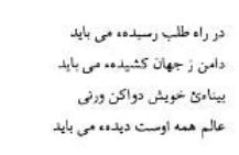
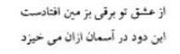
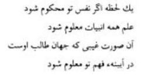
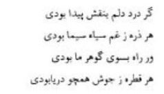
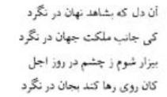
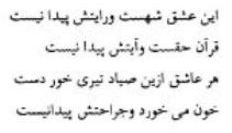
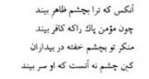
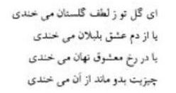
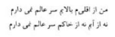
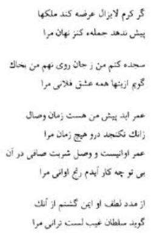

Mevlânâ’nın, toplamı iki bine yakın olan rubâileri arasından dikkatle ve titizlikle seçilen bu rubâiler, kitapta işlenen konulara göre mümkün olduğu kadar birbirini tamamlayacak şekilde sıraya konmuştur. Binlerce rubâi içinden, aynı fikri düşündüren, aynı duyguyu duyuran rubâileri seçip bir araya getirmek kolay olmadı. Böylece seçilen rubâiler, okuduğunuz şu kitapta, kısaca temas edilen konulara ışık tutacak ve onların daha iyi anlaşılmasına yardım edecektir. Bu arada ben de huzurunuzda, hatalarımı, noksanlarımı itiraf ederek sahneden çekiliyor ve sizi büyük mutasavvıf, büyük veli, büyük şair, büyük insan Mevlânâ ile baş başa bırakıyorum. Eflâtun’un açık olarak anlatamadığı ilâhî aşkı o anlatacak, insanın değerini ve insanlığın ne olduğunu o size haber verecektir.
Rubâiler
“Tanrı aşkından bir zarar görmezsin, cansız nasıl kalabilirsin ki, O’nun aşkıyla bilâkis can olursun. Sen, önce yeryüzüne gökten gelmiştin, sonunda, yeryüzünden göğe yükseleceksin.”

“Sen, gökyüzünden kendine bir vatan tutmuş, bir yurt edinmiştin. Kendini lekesiz, temiz bir cihâna mensup bir varlık sanmakta idin. Sonra tuttun, toprağa kendi resmini yaptın, bu kirli toprağa bağlandın kaldın ve aslın olan şeyi unuttun, gittin.”
“Sen toprak değilsin, sen su değilsin, sen topraktan ve sudan yaratılmış değilsin. Sen bambaşka bir varlıksın. Senin, dönen, hareket hâlinde bulunan su ve toprak dünyasıyla bir ilgin yoktur. Sen bu madde âleminin dışındasın. Kalp, bir ırmaktır, can da onun içinde akan âb-ı hayat gibidir. Fakat sen, bulunduğun mevkiide bunların her ikisinden de habersizsin.”
“Topraktan yaratılmış olan bu tenimiz gökyüzünün nûrudur. Hakikate varmak, Hakk’ı aramak hususundaki canlılığımızı, çevikliğimizi, melekler kıskanır, mânâ üstünlüğümüze, rûhî temizliğimize haset ederler. Bazen de beşeri zaafımızdan kötülüklerimizden şeytan bile kaçar.”
“Ezelî aşkın sabahı aydınlanmaya başlayınca yaşayanların teninden rûh kanatlanır, uçar.
Bu uçuşta insan, öyle bir merhaleye erişir ki her nefeste gözün yardımı olmaksızın, dostu görür.”
“Git, gözlerini kapa ki, bütün gönlün göz olsun. O zaman gönül gözüyle sana başka bir cihan, başka bir dünya görünecektir.
Eğer sen, kendini görmekten, kendini beğenmekten kurtulursan, bütün yaptığın işler beğenilecektir.”
“Bu yalnızlık, binlerce can değer, bu serbestlik, cihan mülkünden daha fazla kıymetlidir.
Bir an Hak’la olmak, Hak’la bulunmak, candan, cihandan, ondan bundan daha çok değerlidir.”
“O’ndan haberi olmayan kimse, başını yastığa koyunca uyur. O’ndan haberi olan, nasıl olur da uykuya varır? Bu şaşılacak şeydir. Aşk gelir, bütün gece, iki gözüme bakarak ‘Yazıklar olsun O’nsuz uyuyan kimseye!’ diye söylenir durur.”
“Kendi kendimden kaçmak isterim. İsteklerden kurtulmak, hür olarak yaşamak arzu ederim.
Ben durakların, merhalelerin bağları ile bağlanmışım, bütün bu bağları koparmak, kırmak niyetindeyim.”

“Aşk yolunda yetişkin olmalıdır. Elini eteğini dünyadan çekmiş bulunmalıdır.
Sen kendi körlüğünü tedavi etmeye çalış, yoksa âlem hep O’ndan ibarettir. O’nu görecek göz olmalıdır.”
“Varlık ve yokluk hep O’dur. Sevinci ve kederi hasıl eden de hep O’dur. Sende görecek göz yok ki, tepeden tırnağa kadar hep O’ndan ibaret olduğunu görebilesin!”
“Sen, Tanrı kitabının bir nüshasısın. Sen kâinatı yaratan kudretin bir aynasısın.
Dünyada ne varsa senden dışarıda değil, ne istiyorsan, sen onu, kendinden iste, kendinde ara.”
“Sarayının kapısından sık sık geçmiyorsam bu, seni kıskananların korkusundandır.
Doğrusunu istersen sen, düşünce gibi gece gündüz gönlümdesin. Ben, seni aradığım zaman gönlüme bakarım.”
“ ‘Her tarafta Allah’ın nûru vardır.’ dediler. Halktan, ‘O nûr nerededir?’ diye bir feryâd yükseldi. Hakikati bilmeyen kişi, sağına soluna bakındı, O’nu aradı, bulamadı. Ona dediler ki: ‘Bir an için sağsız ve solsuz bakabilirsen O’nu görürsün.’”
“Senin yanağının güneşi, göklerin ötesindedir. Senin güzelliğini dil anlatamaz, açıklayamaz. Senin aşkın, benim canımın içindedir. Öyle olduğu hâlde ne gariptir ki, o, canın da cihanın da dışındadır.”
“Ben bir damla gibi görünüyorsam da damla değilim, ben bütün bir denizim. Ben şaşı değilim ve şaşılar gibi de gurura kapılmamıştım. Her bir zerreye ben, hâl dilimle hitap edecek olsam, zerre, ‘Ben zerre değilim.’ diye feryâd eder.”
“Diyorsun ki: ‘Şu maddî varlığımla, tenimle senden uzaktayım, ama gönlüm senin yanındadır.’ Bu hâlde, sakın beni sevgilin sanma! Sonra bir gün, benim yerimde, kendi hayâlinin şeklini, nakşını görürsün de gönülden şikâyet çığlığını koparırsın.”

“Âşıklık sözünü, ilk defa işitir işitmez canımı da gönlümü de gözümü de O’nun yoluna koydum. O’na dedim ki: ‘Sevenle, sevilen iki yarı varlıklar mıdır?’ Aslında onların her ikisi de bir, fakat ben, şaşılığımdan dolayı onları ayrı görüyordum. “

“Senin elinin, gözünün, ayağının iki olması doğrudur. Fakat gönül ve sevgilinin ayrı ayrı oluşu hatadır. Yani, bunları ayrı ayrı görmek yanlıştır.
Sevgili dediğimiz varlıklar bir bahanedir. Gerçek sevgili Allah’tır. Kim ki, bunları bir bilmez de iki zannederse o, ya Yahudi’dir yahut puta tapandır.”
“Ne ben, benim; sen, sensin ne de sen, bensin. Hem ben, benim, hem sen, sensin, hem sen, bensin. Ey Hotenli güzel! Seninle öyle bir hâldeyim ki, anlayamıyorum, ben mi senim, sen mi bensin?”

“Olur ve saklanırız. Ben, kendi kendime düşünür de derim ki: ‘O, benim midir, senin midir?’ Çünkü ikimizin arasında, ‘ben’ ile ‘sen’ yokuz.”
“Sonsuz olan o şehirdenim. O şehrin yolu, sonsuz bir yoldur. Oraya varmak için ne başa ne ayağa ihtiyaç vardır. Bu sebeple o şehre başsız, ayaksız git, çünkü baş ve ayak hep odur.”
“Ey can! Senin gönlünden benim gönlüme bir yol vardır. Benim gönlüm o yolu araştırmak hususunda uyanıktır. Çünkü gönlüm, berrak, duru su gibi hoştur. Berrak, duru, saf su ise aya ayna tutar.”
“Ben öyle bir canım ki, yüz binlerce tenim vardır. Bunların hepsi de ben olunca hiç olmazsa kendimden başkasından bahsetmeyeyim. Dalga gibi bedenimden bir baş göstereyim de dikkatle bak, gör ki, o başı gösteren de benim, başkası değil.”
“Ben, öyle bir canım ki, yüz bin tane bedenim var. Fakat ne yapayım ki, ağzım bağlı, hakikati söyleyemiyorum. Sanki iki bin kişi gördüm. Bunların hepsi de ben imişim, şaşılacak şeydir ki, bütün bunların içinde ben olan bir tanesini bile göremedim.”
“Ben yüz bin teni olan canım. Can nedir? Ten nedir? Can da ten de benim. Hani birisi var ya! O da benim, ona hoş gelsin diye kendimi zorla bir başkası hâline getiriyorum.”
“Kendi hayâlinin köyünde ne diye koşup duruyorsun? Neden gözlerini, gönül kanıyla yıkamaktasın?
Tepeden tırnağa kadar bütün varlığın Hak’tan ibarettir. Ey kendisinin ne olduğundan haberi olmayan gafil! Sen kendinden başka neyi arıyorsun?”
“Senin canında bir can vardır. O canı ara. Senin tenin dağında çok kıymetli bir cevher bulunmaktadır. O cevherin mâdenini ara.
Ey yürüyüp giden sûfî! Eğer sen O’nu arıyorsan O’nu dışarıda arama, aradığını sen, kendinde ara!”
“Ey dost! Dostlukta sana yakınım. O kadar ki, nereye ayağını bassan sevine sevine o yerlerin toprağı olurum. Sevgilim, âşıklık mezhebinde, reva mıdır ki, âlemi seninle göreyim de seni görmeyeyim.”
“İnsaf et, aşk güzel bir iştir. Onun bozulması, güzelliğini kaybetmesi, tabiatın kötü niyetli oluşundandır. Sen kendi şehvetine aşk adını koymuşsun, halbuki, şehvetten aşka ulaşabilmek için çok uzun yollardan geçmek lâzımdır.”
“Bu bizim sarhoşluğumuz, kırmızı şaraptan değildir. Bizim şarabımız, aşk kadehinden başka yerde bulunmaz. Sen, benim şarabımı dökmek için geldin. Fakat ben, görünmez bir şarabın sarhoşuyum, bu sebeple benim şarabımı görüp dökmeyeceksin.”
“Yerde ve havada olan her zerreye iyi bak ki, onlar da bizim gibi bir kudretin meftunu ve mecnunudur. Neşeli neşesiz, iyi kötü, her zerre eşsiz bir güneşe gönlünü kaptırmış, dönüp durmaktadır.”
“Sevgili güneş gibi parlar, ışık saçar. Âşık ise güneşin aydınlığında titreyerek uçuşan zerre gibi döner durur.
Aşk baharının rüzgârı esmeye başlayınca kuru olmayan her dal, sallanır.”
“Aşk geldi, derimin, damarlarımın altında akan kan gibi oldu. Beni benden boşaltarak dost ile doldurdu. Vücudumun her tarafını, bütün zerrelerimi dost kapladı. Benden, bana ancak bir isim kaldı ve arta kalan hep o, oldu.”
“Sudan ve topraktan yaratılmış fâni bir sevgiliye malik olan, ona kavuşunca sükûn bulur. O kimse ne kadar nâdir, ne kadar az bulunur bir kimsedir ki, maddî güzellere gönül vermez de senin gibi esrarlı ve acayip bir sevgilinin muhabbetine düşer.”
“Berrak, duru sudan daha temiz bir aşkım var. Bu aşk oyunu, şehvetiyle ilgili olmadığı için bana haram değildir. Aşk başkalarını, şekilden şekle sokar, hâlden hâle kor. Halbuki bu benim aşkım, gelip geçici olmadığı gibi sevgilime de zevâl yoktur. O ölümsüzdür.”


“Deniz senin aşkından coşar, köpürür. Kıyılarını hırçın dalgalarla döver durur. Bulutlar, senin ayaklarına inciler saçar. Senin aşkınla yere bir yıldırım düştü. Bu duman, göğe o yüzden yükseliyor.”
“Bağda binlerce ay yüzlü güzeller, güller ve misk kokulu menekşeler var. Dereler içinde akıp giden sular var. Bütün bunların hepsi birer bahane, aslında yalnız O, yalnız O, var.”
“Âlem yeşilliklerle dolu; her taraf bağ ve bahçelerle süslenmiş. Her şey ezelî güzelliğin aksi ile gülümsüyor. Her yön, her zerre, ilâhî mâdenden çıkarılmış cevherler gibi ışık saçmakta her tarafta, aynı rûhu taşıyan birleşmiş canlar var.”
“Kendini kaybetmiş, sarhoş olmuş bülbülden tatlı bir ses işitiyorum. Semânın rüzgârında, gönül alıcı bir hâl buluyorum. Suda, hep sevgilinin hayâlini görüyorum. Gülden, her zaman, bana yabancı olmayan bir koku, bir tanıdık kokusu alıyorum.”
“Bu bahar mevsimi değil başka bir mevsimdir. Her gözdeki mahmurluk, başka bir buluşma neticesidir. Her ne kadar bütün dallar, rüzgârların tesiriyle sallanıyorlar, oynuyorlarsa da aslında her dalın kımıldanışının başka bir sebebi vardır.”
“Aşkta bütün dertlerin devası vardır. O, öyle bir buluttur ki, içinde yüz binlerce şimşekler çakar. İçinde onun nûrundan bir deniz hasıl oldu ve bütün bu kâinat orada boğuldu, gitti.”
“Aşk, çok hoş bir şeydir. Ama insanın başına, türlü türlü belâlar getirir. Âşık olan kişinin bu belâlardan sakınmaması gerekir. Mert olan kişi, aşk mezhebinde aşk onun canına yettiği, hayatına kastettiği zaman bile ondan sakınmaz.”
“Bir kimse, kendi benliğinden mutlak surette fâni olmadıkça onun için (tevhid) Hakk’a ulaşmak imkânsızdır. Tevhid, hulûl değildir; tevhid, benlikten kurtulmak, varlıktan sıyrılmak, yok olmak demektir. Yoksa boş ve mânâsız sözlerle bâtıl, hak olmaz.”
“Hepimiz Tanrı kudretinin oyuncağıyız. Varlık, zenginlik, hep O’nundur, bizlerse hep yoksul kişileriz. Üstünlük iddia etmek, başkalarında bulunanlardan daha fazlasını istemek, birbirini çekememek, ne mânâsız ne boş şeydir. Bütün insanlar, hepimiz aynı sarayın kapısına mensup değil miyiz?”
“Ben aklı delil edip dağlara düşürenin kölesiyim. Ondan yüzlerce can feryâd etti, yüzlerce gönle kan doldu. Allah ‘a yemin ederim ki âşıkların gözlerinden akan yaşlara âb-ı hayat gıpta eder.”
“Ben zerreyim, sen benim güneşimsin; ben gam hastasıyım, sen, tam benim ilacımsın. Kolsuz, kanatsız arkanda uçar dururum, sanki ben bir saman çöpü olmuşum, sen de benim kehribarımsın.”

“Eğer bir an hakkıyla nefsine hâkim olabilsen bütün peygamberlerin ilmi sana malum olur. O zaman, bütün dünyanın aramakta olduğu güzeller güzeli, o gayb âleminin güzeli, senin anlayışının, idrakinin aynasında belirir, kendini gösterir.”
“Gönlümde, perileri bile kıskandıran bir güzel mevcut iken bu dünyada, benim gibi neşeli ve mesut kim vardır? Allah’a and olsun ki, ben, neşe olmadan yaşayamam. Ben, gam denen bir şey varmış diye işitiyorum, fakat onun ne olduğunu bilmiyorum.”
“Gam kimdir ki ermişlerin gönüllerinin etrafında dolaşabilsin. Gam âşıklara yanaşamaz. O ancak gönülleri donmuş, kalpleri buz kesilmiş kişilerin başına belâ olur. Allah adamlarının gönlünde öyle bir deniz vardır ki, onun çok hoş dalgalanışından aşka gelir de şu gökyüzü dönmeye başlar.”
“Tanrı’ya av olursan kederden, ıstıraptan kurtulursun. Eğer kendi benliğinin dışına çıkamazsan, kendi sıfatlarından ayrılamazsan gam ve kasavetle bağlanır kalırsın. Şunu bil ki, maddî varlığın, dünyevî arzuların senin yolunu kesmektedir. Şu hâlde, kendinde kalma, kendinle oturma, aksi hâlde muzdarip olursun, hasta olursun.”
“İstiyorum ki, gönlüm, O’nun gamı ile anlaşsın, arkadaş olsun. Gönlüm, O’nun gamını elde ederse ne iyi olur. Ey âşık gönül! Aklını başına al da O’nun verdiği gamın kıymetini bil. O’nun gamını yakala, bağrına bas. Gözünü kapayınca gamının gam değil bizzat kendisi olduğunu anlayacaksın.”
“Ey gönül bir sen varsın, bir de O’nun derdi var. O’nun dertlisi olmak ne hoştur! O’nun derdi senin dermanındır. Bu sebeple O’nun verdiği ıstırabı çek; sakın şikâyet etme, sızlanma! O’nun takdiri, O’nun fermanı budur. Maddî arzularını ayak altına alırsan, o zaman nefsin köpeğini öldürürsün ki, asıl kurban da budur.”

“Eğer gönlümde bulunan ıstırabı, derdi, açığa vurabilseydim, her zerrenin yüzü gamdan simsiyah kesilirdi. Eğer bizde bulunan gönül cevherine doğru bir yol bulabilseydi her damla su, coşar, köpürür, kocaman bir deniz olurdu.”
“İnle ki, senin bu iniltilerini işiten bir komşun vardır. Bu komşu sana şah damarından daha yakın olan birisidir. Ağla ki, çocuğun ağlaması sütannesinin merhametini uyandırır. Her ne kadar ruh çocuğunu terbiye eden büyük terbiyeci, seni sevdiği için sana zararlı olacak istekleri yerine getirmese, dersen yine ağla, çünkü ağlamak aşkı besler, ona sermaye olur.”
“Bazen, onun gamından candan bıkarsın, bazen de için yanarak onun aşk hikâyesini anlatır durursun. Neden başı dönmüş bir hâlde dünyanın etrafında koşup duruyorsun? Kimi arıyorsun? O aradığın senin, dışarıda değil ki!”
“Sen çok kıymetli bir inciyi aradıkça o inci olursun, sen ekmek peşinde koşar, sadece ekmek düşünürsen ekmek kesilirsin. Sen bu nükteli ve rumuzlu sözü anlarsan her şeye aklın erer: Ne arıyorsan, neyin arkasından koşuyorsan sen osun, o şeysin.”
“Eğer ben kendi değerimi, insanlığımı bilseydim, kendi büyüklüğümü gereği gibi tanısaydım, eteğimi tozdan, topraktan, dünyaya ait kirliliklerden çekerdim de ruhen hafiflemiş, günâhlardan kurtulmuş olarak gökyüzüne yükselir, başımı dokuzuncu kat göğün üstüne kordum.”
“Senin varlığın, kendini bir şey sanman düşüncesi sende bulundukça rahat oturma. Çünkü sen hâlâ puta tapmaktasın. Tutalım ki, uğraştın, sonunda zan putunu kırdın. Fakat putu kırdığını sanman ve kendinde bir varlık olduğuna inanman, bu da senin için ayrıca kırılmamış bir puttur.”
“Eğer sen aşk yolunda yürürsen yolunu açarlar. Eğer bu uğurda yok olursan senin yokluğunu varlığa çevirirler. Benliği, gururu, ayak altına alırsan, mânen o kadar büyürsün ki dünyalara sığmazsın, işte o zaman seni, sensiz sana gösterirler.”
“Sen, sende oldukça ve kendine taptıkça, senden, sana yol vermezler. Sana gerçek varlığını buldurtmazlar. Fakat benliğini ayak altına alıp da yok oldun mu seni gözden dışarı çıkarmazlar. Hele dünya ve âhiret nimetlerini istemekten kendini kurtarabilirsen o zaman tam bir insan diye seni parmakla gösterirler.”
“Sen dışa, etrafına bakacak olursan burada, çeşit çeşit renkte, çeşit çeşit dil konuşan acayip insanlar görürsün. Allah, Kur’ân’da ‘Rabbine dön!’ (Fecr Sûresi, 28. âyet) diye buyurdu. Rabbe dönmek, insanın kendi içine dönmesi, daha doğrusu insanın kendi dışında bulunan insanları değil, kendi içinde bulunan insandan başkasını bulması, görmesi demektir.”
“Ey topraktan yaratılan ten, aklını başına al, topraktan söz açma. O tertemiz ilâhî aynanın hikâyesinden başka bir şeyden bahsetme. Gökleri yaratandan rûhunda bir şey var. Bu sebeple sen gökleri yaratanın sıfatından başka bir şeyden dem vurma.”
“Dünya, baştan başa O’nun sıfatlarıyla büyülenmiştir. Her madde, her şey, kendi varlıklarında görünüyorlar ama aslında hepsi, O’nda yok olmuşlardır. Ancak O’nun hayat perdesinin ötesine geçenler, sıfatlara bağlanmamışlar, zatını bulmuşlardır.”
“Felek, bizim kendi görüşünü beğenmiş, egoist tab’ımızm kölesi değildir. Şu varlık âlemine geliş bize yokluk sermayesi olmuştur. Perdelerin arkasında gizlenmiş, bizi terbiye eden büyük bir terbiyecimiz var. Aslında biz O’nun yanındayız ve dünyaya gelmiş değiliz. Bu görünen maddî varlığımız bizim gölgemizdir.”
“Mânâda var, fakat görünürde yok olanı kim gördü? Gönülde görülen, hissedilen, fakat dilde olmayanı kim gördü? Cihanın varlığı olmakla beraber cihanda bulunmayanı kim gördü? Varlıkta da yoklukta da böyle yokluğu kim gördü?”
“Ey özden, içten haberi olmayan, dış görünüşe aldanan, madde ile gurura kapılan, aklını başına al! Senin rûhunda, gönlünün içinde bir dost var. Duygu, senin teninin özüdür, duygunun özü ise, senin canındır. Fakat, tenden, duygudan ve candan öteye geçersen her şeyin yalnız o olduğunu anlarsın.”
“Gönlünü, kendi varlığından, kendi benliğinden temizlediğin zaman, rûh alemindeki eski sevgilini kendin görürsen. Aynasız, kendi yüzünü görmeye imkân yoktur. Bu sebeple sen, sevgiliye bak, onun yüzü senin aynandır.”

“Yarattığı eserlerini kendine perde yaparak kendini gizlemiş olan eşsiz güzeli, mânâ gözüyle gören gönül, nasıl olur da gelip geçici olan dünya mülküne bakar? Ben, ecel gününde bile gizli sevgilinin yüzünü bırakıp da canını düşünen ve canını gören gözden memnun olmam.”
“Eğer ömür tükendi ise gam yeme, Allah başka bir ömür verdi. Fâni ömür kalmadıysa, işte ebedî ömür! Bil ki aşk, âb-ı hayattır, bu suya dal. Bu suyun her damlası, başlı başına bir hayat denizidir.”

“Âşık için ya basit insanlar gibi ölüp yok olmak yahut da aşk yolunda can vererek ölümsüz hayata kavuşmak vardır. Yoksa ‘Aşk, hayat yanağından su içmektir.” sözü bir lâftan ibarettir.’

“Bu aşk bir pâdişâhtır, fakat bayrağı görünürlerde yoktur. Kur’ân haktır, fakat âyetlerinin esrarı bilinmez. Her âşık, bu avcıdan bir ok yemiştir. Kanlar içinde kalmıştır, fakat yarası görünmez.”
“Senin aşkın, dünyadan rahatlığı, selâmeti aldı götürdü. Ayrılığın, insanın canını alan ecel oldu. Yüz binlerce cana verilmeyen gönlü, senin tek bir gülüşün aldı gitti.”
“Aşk odur ki, elemden, kederden uzaklaştırır; aşk odur ki, neşeye, neşe katar. Bizi annemiz doğurmadı, bizi o aşk doğurdu. Bizi doğuran o anaya yüzlerce rahmet, yüzlerce aferin!”

“Aşkın gönlü, asla dünyaya önem vermez, ona bakmaz, zaten aşkın kendisinden başka bakılacak ne vardır? Ecel günü, gözüm, aşkı unutup da tenimden ayrılmak üzere olan canı düşünürse ben, o gözden şikâyetçi oluyorum.”
“Gönlümü, aşk gamına uğratmak istiyorum. Canımı, belâ okuna hedef tutacağım. Ben, senin aşkınla geçmeyen ömrümü, bugün, gönül kanına kaza edeceğim.”

“Bizim Peygamberimiz’in yolu, aşk yoludur. Biz aşk oğullarıyız, bizim anamız da aşktır. Ey şu et ve kemikten ibaret olan maddî varlığımızın içinde gözlenen mânâ anamız! Ey bizim, hakikati idrak edemeyen îmansız tabiatımızın ötesinde bulunan büyük yaratıcımız!”
“Ey aşk, sen ne biçim bir şeysin ki, kâinatta mevcut olan her şey senin ve her şey sensin. Neşelerimiz, kederlerimiz senden olduğu gibi, topluluk hayatımızdaki dağınıklıklar, perişanlıklar da senden. Dünyadaki bütün iyilikler, bütün güzellikler senin eserin. Altınların hepsi, senin bedeninden. Sanki sen bir anasın ve bütün insanlar senin çocukların...”
“Ey aşk, sen ne kadar hoşsun! Hoşluk da nedir? Sen hoştan da daha hoşsun. Beni ateşinle yak. Senin ateşinle yanmak da pek hoştur! Altı cihetin hepsi de aşk yüzünden âbâd oldu, mutlu oldu, hoş oldu. Bununla beraber bu altı cihetten de dışarı çıkmak, hudutsuz aşkı bulmak daha hoş....”
“Bugün de her gün gibi yine harabız, yine harap olmuşuz. Endişe kapısını, düşünce kapısını açma; içli feryâdları ile, yanık sesiyle bize her şeyi unutturan rebâbı eline al, çalmaya başla. Her zerrede, her şeyde, kâinatı yaratanın kudretini görenler ve onun ilâhî güzelliğini kendilerine mihrap edinenler için yüz çeşit namaz, yüz çeşit rükû, yüz çeşit secde vardır.”
“Bizim şarabımız kadehsiz olarak sunulmaktadır. İçimize bir ateş düşmüştür, yüreğimiz yanıp tutuşmaktadır. Fakat bu gönül yangınının dumanı görülmemektedir. Aşk rebâbının feryâdı, inlemesi, gerçek sevgilimizin, gönül sultanımızın yayından, onun mızrabındandır. Sakın ‘Bu, rebâbdır, bu sesi rebâb çıkarıyor.’ deme!”

“Bizim, sarhoş olmamız için şaraba ihtiyacımız yoktur. Meclisimizin neşelenmesi için çeng ve rebâb da istemeyiz. Biz gönül alıcı bir güzelin yüzünü görmeden, hoş sesli çalgıcıyı dinlemeden, sâkinin elinden şarap içmeden mest olmuşuz, kendimizden geçmişiz.”
“Sen cansın, sen cihansın. Cihan ancak seninle hoştur. Sen beni yaralasan mızrağının tenimde açtığı yara, senin açtığın yara olduğundan benim için bir lütuf olur. Avucuna aldığın bir toprak parçası bile bir kimya mâdenidir. Hulâsa, hoş olmayan her şey, seninle hoştur.”

“Seni kalp gözü ile değil baş gözü ile gören kimse, seni olduğu gibi göremez, yanlış görür. Bu görüş, imansız bir kimsenin temiz bir mü’mini görmesine benzer. Sen uyanık kişilere, uykulu gözle, kapalı gözle bakma! Çünkü senin baktığın bu göz, gönül gözü değildir.”

“Ey gül, sen, gül bahçesinin güzelliğine hayran oldun da onun için mi gülüyorsun? Veya aşk bülbüllerinin ötüşleri mi seni güldürüyor? Yahut gizli sevgilimin yanağındaki gül gibi mi açılıyor ve gülüyorsun? Galiba sende ona benzer bir şey var, bu yüzden neşeleniyor, bu yüzden gülüyorsun.”
“Ey gözsüz ve ağrısız nergis, sende bir dalgınlık, bir hayranlık var. Sanıyorum ki, sen, yeşillik gelinlerinin yüzlerini hayranlıkla seyrediyorsun. Hayır ben yanıldım: Sen, bahar gelinlerinin güzel yüzlerinde, benim örtünmüş, kendini gizlemiş sultanımın güzelliğini seziyor da ona hayran oluyorsun.”
Gönül Kimin Elinden Tutarsa O Kimse, Kirli Arzuların Çamuruna Düşmez
“Sen, gönül sahibi olmadığından ötürü senin elinden tutmadı, ilâhî sevgiden nasibini almadın, sevmek mutluluğuna eremedin, kimseyi sevemedin. Şunu iyi bil ki, gönül, kimin elinden tutarsa, o kimse, kirli arzuların çamuruna düşmez, kirlenmez. Bir kez bile, benim gülüm, rengi ile, kokusu ile gönül sıfatından, gönül huyundan başka bir huy edinmedi. Benim elimde bir şey yok, ben yokluk içindeyim. Fakat bu yokluk, beni, her şeyi elde etme yoluna, ilâhî aşk yoluna sevk etti.” (Rubâiler, 434)
Dosta Gönülden Bir Gizli Yol Vardır
“Ey şaşırmış gönül! Dosta, candan giden bir yol vardır. Ey yolunu kaybetmiş kişi! Dosta hem apaçık, hem gizli bir yol vardır. Eğer altı yönden de senin yolunu keserler, kapatırlarsa korkma, çünkü, senin gönlünün derinliklerinden Hakk’a giden gizli bir yol vardır.” (Rubâiler, 411)
Gönle Dedim ki, Lütuf Merhemi Ol; İnciten Diken Gibi Olma
“Gönlüme dedim ki: “Başkalarından ileri gitme, lütuf merhemi ol, inciten diken gibi olma, kimseden sana bir kötülük gelmesini istemiyorsan kötü sözlü, kötülük öğretir, kötülük düşünür olma.” (Rubâiler, 1117)
Git, Dervişlerin Binek Hayvanlarının Ayağının Toprağı Ol
“Ey gönül, git, sonunu düşünenlerden ol, yabancılık âleminde, hısımlarına, yakınlarına katıl. Eğer seher rüzgârını kendine binek yapmak ister isen git, dervişlerin, binek hayvanının ayağının toprağı ol.” (Rubâiler, 1119)
Allah’ım Gönül Âlemi Senden Dirilik Buldu
“Allah’ım, gönül âlemi, senden dirilik, canlılık kabiliyetini elde etti. Pak olan zatının sıfatları, canın müşküllerini çözdü. Anlayış, fikir, gönül, akıl senden hayat buldu. Sen, canın canısın, canın aklısın, canın gönlüsün.” (Rubâiler, 1544)
Gönül Gözü Açık Olan Hak Âşıklarının İşleri Güçleri Hayranlıktır
“Gönül gözleri açık olan Hak âşıklarının işleri güçleri hayranlıktır. Körler de Hakk’ın güzelliğini, sanatını, yaratma gücünü görmezler de fikir yürütürler, düşüncelere dalarlar. Gayb âleminden sana, yüzlerce dal güller, çiçekler açıp dururken sen, rıza dalına neden balta vurursun?” (Rubâiler, 1808)
Gönül Bir Gün Olur; Seni Gönlünü Alana Ulaştırır
“Gönül, bir gün olur, seni gönlünü alan ulaştırır. Can, bir gün olur, seni sevgiliye ulaştırır. Sen de derdin eteğini elden bırakma, çünkü o dert, bir gün olur, seni dermana ulaştırır.” (Rubâiler, 1991)
Gönül Kitabımızdan Bir Yaprak Oku
“Eğer gönül kitabımızdan bir yaprak okusan sonsuz bir hayranlık içinde kalırsın. Bu ne güzel hayranlıktır. Bir an gönül dersine otursan hocaları okutmaya başlarsın.” (Rubâiler, 2071)
Geceleri Gönlün Kapısı Açılır
“Geceleyin, yürü, zira gece, sırlar rehberidir. Herkes uyurken ilâhî aşk sırları, mânâ zevkleri gönle gelir. Çünkü geceleyin gönlün kapısı açılır. Yapılan işler, yabancıların gözlerinden gizlenir. Geceleyin gönlümüz aşk ile gözlerimiz ise uyku ile karışmış olduğu hâlde bizim dostun güzel yüzü ile işimiz vardır, buluşmamız vardır.” (Rubâiler, 219)
Ben; Benlikten Kurtulanın Kuluyum Kölesiyim
“Bensiz, bizsiz olduğu hâlde hoş olanın, benlikten kurtulduğu için mutlu olanın kulu, kölesiyim. Şikâyet etmeden, kimseye yük olmadan kendi acıları ile baş başa kalarak yalnızlıktan hoşlanan kişinin gamı ile arkadaşım. ‘Sevgilinin vefakârlığı, ne kadar hoştur? Onun vefalarında ne zevkler vardır?’ diye sordular. Onlara dedim ki: ‘Onun vefalarından haberim yok; bence onun nazları, cefaları hoştur.’” (Rubâiler, 264)
Yeryüzü Tavşan Uykusuna Yatmıştır
“Şu yeryüzü, cansız, aklı fikri yok sanmayasın diye tavşan uykusuna yatmış, sessizce uyur gibi görünüyor. Halbuki o, uyanıktır, canlıdır. O da senin gibi kendi hayatını yaşamakta, Hakk’ın kendisine verdiği görevi yapmaktadır.
Görmez misin, ocakta ateş üstünde kaynayan tencerenin ağzına binlerce köpük yükselir, durur. O köpükleri gören insanlar, tencerenin kaynadığını anlarlar. Şu yeryüzünün kalbinden fışkırıp çıkan çeşit renkli çiçekler, sayısız bitkiler, ağaçlar, neyi anlatır?” (Rubâiler, 324)
Alçak Gönüllü Olmak Küçüklük Değildir
“Büyük kişinin küçülmesi, alçak gönüllü olması, küçüklük değildir. Şüphe yok ki, küçülmek, çocukluk etmek, çocuk gibi olmak, kemâlden gelir, olgunluk alâmetidir. Bir baba çocuk gibi konuşursa akıllı kişi bilir ki, o baba gibi konuşuyor ama, çocuk değildir.” (Rubâiler, 423)
Can Sonunda Gideceği Yeri İstemektedir
“Geçici bir zaman, bir iki gün, bedende konuk olan ‘can’ ile öyle anlaşmış, öyle kaynaşmış, dost olmuşsun ki, sana ölümden söz etmem, yersiz ve anlamsız geliyor. Fakat, senin çok sevdiğin, bir türlü ayrılmak istemediğin ‘can’ ise, sonunda konak yerini istemektedir. Konak yeri ise ölümdür.” (Rubâiler, 423)
Eğer Aklın Varsa Git Hak’tan Dert İste
“Herhangi bir kimsede, gizli bir aşk derdi yoksa, o yaşıyormuş gibi görünen bir ölüdür. Onun gönlü ve canı yoktur. O adeta gezen, dolaşan bir ölüdür. Eğer aklın varsa git de Hak’tan dert ise, keder iste, çünkü dertsiz olmak aşk derdine düşmemek, tedavisi imkânsız bir hastalıktır.” (Rubâiler, 477)
Hak Dostu ile Bir An Bulunmak Bir Can Değer
“Hak dostu olan bir insan ile bir an beraber bulunmak, bir can değer. Ondan düşen bir kıl, kıymetli bir mâdene değer. Fakat öyle insan da vardır ki, onunla buluşmak, onunla konuşmak şöyle dursun, onu görmemek cihan mülküne değer.” (Rubâiler, 606)
Bahar Mevsiminde Dostların Bir Arada Oturmaları Gerekir
“Havaların bulutlu, yağışlı olduğu günlerde, dostların bir arada toplanıp oturmaları gerekir. Nasıl ki, güller, bir bahçede öteye beriye serpilmiş olarak değil de bir arada toplu olarak bulundukları zaman, bahçeye güzellik ve ihtişam verirler, birbirlerini adeta tazeleştirirlerse dostlar da bahar mevsiminde bir araya gelince gençleşirler.” (Rubâiler, 639)
Kitaptaki Konularla İlgili Başka Şiirler
Divan-ı Kebîr’den seçilen bu şiirlerle bu küçük kitap biraz daha büyümüş ve değerlenmiş oldu. Daha evvel seçilen rubâiler gibi bu şiirler de Mevlânâ’nın insanı şaşırtacak kadar çok ve güzel olan şiirleri arasından derlenmiştir.
Gerçekten şimdiye kadar gelmiş geçmiş, çeşitli milletlere mensup, dünyanın en ünlü şairleri içinde hiçbir şair, Mevlânâ kadar çok miktarda, aynı zamanda çok güzel, mânâlı, ahenkli heyecanlı, coşkun ilâhî aşk şiirleri söylememiştir. Bu yüzden hiç tereddüt etmeden onu, dünyanın, eşsiz en büyük ilâhî aşk şairi sayabiliriz. Homeros, üzerinde yaşadığımız şu madde dünyasının şairlerinin babası olarak ün salmıştır.
Büyük Mevlânâ ise rûh âleminin, mânâ dünyasının şairlerinin sultanıdır. Mevlânâ, şiirlerini, kalemi eline alıp, kafiye düşünerek, vezin hesaplayarak yazmamıştır. O, Tanrı aşkının verdiği coşkunlukla kendinden geçtiği zamanlar, mübarek kalbine doğan hakikatleri, ilâhî duyguları, kolayca konuşur gibi şiir hâlinde söylemiştir. Bu hâl, dünyada hiçbir şaire nasip olmayan bir hâldir. Bu şüphesiz bir keramettir. Çünkü o, kendi varlığını, yarattığı kusursuz ve güzel eserlerle bize hissettiren Allah’ın âşığıdır; O’nun aşkı ile coşmakta, O’nun aşkı ile söylemektedir.
Oğlu Sultan Veled babasının şiirlerinden bahsederken:
Tanrı’dan rahmettir onun sözleri
Körler okusa açılır gözleri
diye yazmıştır. Biz de eşsiz Mevlânâ’nın ilâhî şiirlerini okurken mânâ gözümüzün açılmasını niyaz edelim.
“Ben Tanrı’ya Mensubum”

“Ben yücelik ülkesinden, rûh âlemindenim. Bu cihan düşüncesinde değilim. Ben ne sudan ne de topraktanım. Benim bu dünya ile ilgim yok.
Gökyüzünün sonsuz boşluğu yıldızlarla dolu imiş, denizlerde inciler varmış, ovalarda nergisler, yaseminler, açarmış... Ben bunlarla da ilgilenmem.
Bana, ‘İncilik göster, nazik ol, bizimle bir an arkadaşlık et.’ diyorsun. Halbuki, gerçek sevgili bana, ‘Bir kararda durma!’ dedi. Ben zaten seni dost saymıyorum. Tanrı’nın lütuf dadısı, beni lütuf sütüyle besledi, yetiştirdi. Ben o sütün mahmuruyum. Bu yüzden ‘zemzem’ sevdasında değilim.
Ben, öyle bir mânevi zevke dalmışım ki, sevinçlerden bile usanmışım, bıkmışım. Gönlümün yârinden başka hiçbir kimse, bana hoş gelmez, beni neşelendirmez. Ben aşk ırmağının suyuna düştüm, yıkandım, renkten ve kokudan temizlendim. Sevgilimin, kalbimde açtığı yaranın zevki aşkına düştüm de merhem aradığım yok.
Ben, güzel gülüşlü İsa’yım. Şu ölü dünya benimle dirildi, fakat ben, Tanrı’ya mensubum, benim Meryem’le bir alâkam yok.
Ben, aşktan bu sözü işittim de susmayı kendime yol edindim. Aşka deyiniz ki: ‘Ben artık dosta konuşurken, ‘Hayır, neden?’ sözlerini söyleyemem.’”
“Ben Neyim?”
“Sen ne bilirsin ki ben iç âlemimde nasıl bir pâdişâhla oturmaktayım?
Sen, benim sararmış yüzüme bakma, benim demir gibi ayaklarım vardır. Ben yüzümü, tamamıyla beni yaratan ve bu dünyaya getiren padişaha çevirmişim ve O’na, öyle candan bağlanmışım ki, O’ndan, binlerce aferin almışım. Ben, bazen güneşe, bazen incilerle dolu denize benzerim. Dıştan, topraktan yaratılmış, değersiz bir varlık gibi görünüyorsam da iç yüzümle, en aziz, en şerefli bir mahlûkum.
Şu dünya küpünün içinde, bir arı gibi vızıldar dururum. Fakat sen, sadece benim bu sızlanmalarıma bakma, benim balla dolu kovanım vardır.
Evlere vurur, evlere düşersem de ben güneş ışığıyım. Toprakla sudan doğdum, anam balçıktır, fakat ben akiğim, altınım, yakutum.
Sen, herhangi bir inciyi görürsen o incinin içinde, öte yüzünde başka bir inci ara. Çünkü her zerre, ‘İçimde bir define saklıdır.’ diye söylenip durmaktadır.
Her inci sana, ‘Güzelliğimle yetinme, alnımda parlayan nûr, içimde yanan ışıktan ileri geliyor.’ demektedir.
Ben, sustum. Sen de gerçekleri anlayacak akıl yok; gören anlayan bir can gözüm var diye kulağını sallama, kendini aldatma.”
Aşksız Geçen Ömür
şksız geçen ömrü ömür sayma, onu hiç hesaba katma. Aşk, âb-ı hayattır. Onu canla ve gönülle kabul et. Âşıklardan olmayan kimseyi, sudan çıkanlmış, karaya bırakılmış balık bil; âşık olmayan bir insan, en yüksek bir mevkide bile olsa sen onu, ölmüş ve çürümüş gibi gör.
Aşk gelip eşya dengini açınca, her şey canlanır, her ağaç yeşerir, ihtiyarlanmış daldan bile her an genç yapraklar biter. Aşka avlanan, nasıl olur da ölüme av olur? Ay’ı kendine kalkan edinen bir kimseyi, ok, nasıl ulaşır da yaralayabilir?
Allah’tan yüzünü çevirdin, bari bir kurtuluş yolu bulabildin mi? Haydi Hak yoluna dön, günâh yollarında aptalca kaybolup gitme!
Ne yazık ki bütün temiz canlar, toprağa bağlanmışlar, maddeye esir olmuşlardır. Aşk, bu esirleri kurtarmak için mânâ altınları saçmada, onlara kurtuluş yollarını göstermektedir. Ey sepetine kimsenin ekmek koymadığı kişi, neden üzülüyorsun 7 Sana yardım, ancak senden gelecektir. Ey hakikat fakiri, sen kendi ekmeğini kendi sepetinde ara.
Ey, Tebrizlilerin övündükleri büyük varlık! Ey hakkın ve dinin Şemsi! Gel, gel de himmetinle, gönlün ayağı, saplandığı şu katran gibi balçıktan kurtulsun.”
Aşk Nedir?
“Aşk, göklere uçmaktır. Her an yüzlerce perdeyi yırtmaktır. Aşk, önce nefsini, nefisten kurtarmak, nefsânî yollarda yürümekten vazgeçmektir. Bu cihanı, görülmemiş saymak, kendi gözünü, kendi unsurlarını görmektir.
Gönlüme dedim ki: ‘Ey gönül! Âşıklar arasına karışman, herkesin bakamadığı yönden cihâna bakman, gönüllerin sokaklarında koşman kutlu olsun.’ Ey can! Sana bu nefes alma nereden geldi? Ey gönül, bu çırpınman nedendir.
Gönül bana cevap verdi: ‘Balçıktan yaratılan vücut evine gelinceye kadar iş evinde, rûh âleminde idim. Sonra o âlemden, o sanat evinden uçtum, sanatı yaratanın evine geldim.’”
Aşk Mezhebi
“Eğer sen, aşkı bilmiyorsan gecelere sor, sapsarı yüzlerden, kupkuru dudaklardan öğren. Nasıl ki, su, yıldızı ve ayı aksettirir, gösterirse bedenler de aklı ve rûhu öyle aksettirirler. Can, aşktan binlerce çeşit edep öğrenmede, öyle edepler ki, bunların mekteplerde öğrenilmesine imkân yoktur.
Gökyüzünde, parlak ay, sayısız yıldızlar arasında, nasıl görünürse âşık olan kimse de yüzlerce kişinin arasında öyle görünür.
Akıl, her ne kadar bütün mezheplere vâkıf olsa da aşk mezhebine gelince, şaşırır kalır, ona akıl erdiremez.
Aşk, âb-ı hayatını tadan ve Hızır kesilen gönül sahibine, bütün kaynaklar açılır. Pâdişâhtan dilenciye kadar herkes, tamaha düşmüş, çırpınıp durmaktadır. Halbuki can, aşk yardımıyla tamahkârlıktan ve isteklerden kurtulmuştur.
Güneş, nasıl bütün bineklere binmeye tenezzül etmeden göklerde dolaşırsa sen de güneş gibi aşk kanadıyla havalarda uç, yüksel.”
Aşk Yolu
“Eğer sen, aşkın âşığı isen ve aşkı arıyorsan, keskin hançeri al, utanmanın boğazını kes. Şunu iyi bil ki, Hak yolunda yürüyenler için utanmak, büyük bir engeldir. Bu söz, garazsız bir sözdür. Bunu sevinçle kabul et.
Mecnun neden binlerce delilikler etti? O ünlü aşk delisi, neden birçok çılgınlıklar gösterdi? Bazen elbisesini yırttı, bazen insanlardan kaçtı, dağlara düştü, bazen zehir tattı, bazen fâniliği seçti, düşün bir kere, fâni bir varlık olan Leylâ’nın yüzünün aşkı, bunları yaptırırsa gerçek Leylâ olan ve şanlı sevgilisini gece, Mîrac’a yürüten Allah’ın aşkı nasıl olur. Neler yaptırmaz?
Örümcek, cüssesine nazaran büyük avlar tutarsa her şeyden üstün olan Rabbim’in kuvvetli ağı, neler avlamaz?
Aşk yolu, Hak uğrunda tamamıyla mest olma ve kendini aşağı görme yoludur. Hak âşığı, coşkun akan sel gibidir; derelerde koşar, başını taştan taşa çalar, yukarı doğru çıkmaz, hep aşağılara doğru akar gider.
Can kulağını aç da Hak âşıklarını iniltilerinden, gizli feryâdlarından şu gök kubbesinin boşluğuna, ne gürültüler, ne uğultular aksetmiştir, onları dinle.”
Aranan Dost
“Âşıklara, dostu araştırmak farzdır. Âşıkların, coşkun akan bir sel gibi, yüzlerini, başlarını, yerlere sürerek, taşlara vurarak dostun deresine varıncaya kadar koşması gerekir.
Zaten isteyen hep O’dur. Biz, gölgeler gibiyiz. Bütün bu dedikodularımız bile hep dostun dedikodularıdır.
Bazen akarsu gibi dostun ırmağına akmaktan hoşlanırız. Bazen durgun su gibi, dostun testisinde hapsolur kalırız.
Bazen ateşin üstündeki tencere gibi kaynar, coşarız. O ise bir şeyler düşünerek fazla taşmayalım diye kepçe ile başımıza vurur. Dostun huyu böyledir.
Ağzını kulağımıza koymuş da canımız, dostun kokusunu tamamıyla alsın diye bir şey söyler durur. Nazla, işve ile seni zayıflatır kıla döndürür. Böyle olduğu hâlde sen, iki dünyayı dostun tek bir kılına değişmezsin.
Dostumuzla beraber oturmuşuz, onun yanındayız. Öyle olduğu hâlde dosta, ‘Ey, dost, dost nerede?’ diye soruyoruz. Dostun mahallesinde bulunduğumuz hâlde, sarhoşluğumuzdan olacak, ‘Dost nerede? Dost nerede?’ deyip duruyoruz.
Hoş olmayan kuruntular, fena düşünceler, bizim gevşek tabiatımızdan meydana geliyor, yoksa dostun huyu bu değildir.”
Gönül Kapısı
“Gönlünde aşk olan, bir istek bulunan kimse, gönül kapısına gider de gönül ona kapı açmazsa elbette bunun bir sebebi vardır. Kapı açılmadı diye üzülme. Git, gönül kapısında otur, bekle. Çünkü o gizlenen sevgili ya gece yarısı, yahut da seher vakti gelir.
Her şeyden ayrılan, yalnız Allah’ını arayan can, az bulunan eşsiz bir candır; şaşılacak bir candır. Bulunduğu eyvandan başka bir eyvan seyreden, başka bir dünya gören göz, görüş sahibidir. Onun hoş bir lâkabı vardır.
Sus! Sırları, her yerde açığa vurma. Hatif rûhlu kişilerin toplantısında bir Ebu Leheb de bulunabilir.”
Âşıkların Namazı
"Akşam namazı vakti gelince, herkes ışığını yakar, sofrasını kurar, ben de içimde sevgilimin hayâlini bulur, feryada figâna başlarım.
Göz yaşlarımla abdest aldığımdan ötürü, benim namazım, ateşlidir. Ezan sesi duyulunca gönül mescidimin kapısı dayanamaz, tutuşur yanar.
Kıblemin yönü ne taraftadır? Benim namazım kazaya kaldı. Daima, sana da bana da kaderden bir imtihan vardır. Acaba, Tanrı sarhoşlarının namazı doğru mudur. Sen söyle, çünkü sarhoş, ne zamanı bilir ne mekânı tanır. Acaba bu ikinci rekat mı, sekizinci rekat mı? Acaba hangi sûreyi okudum? Çünkü heyecandan dilim tutulmuştu.
Tanrı kapısını nasıl çalabileceğim? Çünkü kendimde ne elim kaldı ne de gönlüm... Ben bende değilim. Benim elimi de sen aldın, gönlümü de... Allah’ım, bende hiçbir şey kalmadı, hiç olmazsa bana bir güven ver, bir aman ver.
Allah’a yemin ederim ki, namazı nasıl kıldığımın farkında değilim. Rükuyu tamamladım mı, imâm kimdir; haberim bile yok.
Bundan sonra ben, her imamın önünde ve arkasında gölge gibi olayım da benim gölgemi düşürenin, beni yaratanın korkusundan bazen ayağa kalkıp uzayayım.
Gölgenin ne değeri vardır? O’nun rükûuna da bakma, kıyamına da önem verme. Gölgeden bir şey bekleme. Gölge cansızdır, onda bir can vardır sanma.
Gölge, hesaba insanını meydana getiren, beni yoktan var eden o eşsiz pâdişâh olduğu için o yürürse ben de yürürüm, bir dükkân yanında oturursa bende otururum.
Varlığım kalmadığı için hep gölgelerden bahsedip dururum. Gölgede ağız bulunur mu? Gölge kendini düşürenin sözüne tâbi olur.”
Aşkın Sesi
“Her an sağdan soldan aşkın sesi geliyor. Biz göğe yükseliyoruz, kimde bizi seyretmek isteği var? Zaten biz, bu dünyaya gelmeden önce gökteydik, meleklerin dostuyduk. Biz tekrar oraya dönelim. Çünkü esas bizim yurdumuz orasıdır. Aslında biz, gökten de yüceyiz, melekten de üstünüz. Bizim konak yerimiz, O’nun yanı olunca neden biz göğü de meleği de gerilerde bırakmayalım?
Tertemiz inci, ilâhî cevher nerede, kirli toprak dünyası nerede! Neden şerefinizi düşünmeden bu alçak âleme geldiniz, kondunuz? Haydi, eşyanızı toplayın, yükünüzü bağlayın, burası nasıl bir yer?
Genç baht, bizim dostumuz... Can bağışlamak işimiz, meşguliyetimiz... Bizim aşk kervanımızın başında da cihanın varlığı ile övündüğü Mustafa var. Mustafa öyle büyük bir varlık ki, ay, onun mübarek yüzünü gördü, dayanamadı, bölündü ve ona değersiz bir dilenci oldu da bu bahtı buldu.
Şu rüzgârın hoş kokusu, onun mübarek saçlarının büklümünden geliyor. Bu hayâlin parıltısı, kuşluk güneşine benzeyen yüzünden meydana geliyor.
Gönlümüze bak da her an, ayın bölünmesini gör. Neden gözünü o bakıştan ayırıyorsun da başka tarafa bakıyorsun?
Belki de hepimiz can denizinin içindeyiz, hepimiz O’nun huzurundayız. Böyle olmasa, gönül denizinden birbiri ardınca gelen dalgalar nedir?
‘Ben sizin Rabbiniz değil miyim?’ dalgası geldi, beden gemisi bağlandı, hazırlandı. Beden gemisi kırılıp kenara düşünce artık buluşma ve kavuşma zamanı geldi demektir. Buluşma ve kavuşma zamanı, haşrolma ve ölümsüzlüğe erme vakti, lütuf, iyilik çağı çok temiz ve lekesiz bir deniz kesilme çağı...
Deniz ağardı, saf bir hâle geldi de lütuf incilerinin kutusu göründü. Allah’ın nûrundan nûr alan saadet sabahı açıldı.
Bu suret, bu resim kime aittir? Bu pâdişâh, bu bey kimdir? Bütün bunlar, gizli sevgilinin gözünü örten örtülerdir.
Örtüleri açmanın çaresi, bu çeşit coşkunluklardır. Bütün bu tatlı suların çeşmesi, hep sizin başınızda, sizin gözünüzdedir. Başınızda, gözünüzde böyle şeyler yok mu diyeceksiniz? Fakat sizin iki başınız vardır: Biri dünyaya ait toprak baş; öbürü, göğe ait tertemiz, rûhanî baş. Bu görünen başın, öteki baştan meydana gelmiş; bunu anlayasın diye nice tertemiz başlar, toprağın ayağına dökülmüş saçılmışlardır.
Bizim asıl başımız gizli, fakat, topraktan olan başımız meydandadır. Bil ki gizli kalan esas başımız, bu dünyanın ötesindeki sonsuz âlemi düşünmektedir.
Ey sucu! Su tulumunu bağla. Bizim küpümüzün tahammülü yok. Ne olduğunu pek anlayamadığımız dünyada, anlayış testisi pek dar, küçük. Tebriz tarafından Hak güneşi parladı, ben ona dedim ki: ‘Senin nûrun hem herkese bitişiktir, hem de herkesten ayrıdır.’”
Hakikat Denizi
“Sen, bana cansın, sen bana cihansın, ben canı ve cihanı ne yapayım? Sen bana bir ruh hazinesisin, benim kazançla, ziyanla ne ilgim var?”
Herkesten Kaçtım Bütün İnsanlardan Uzaklaştım
“Ne gizliyim ne de görünürüm. Ben kevn ü mekânı neylerim? Sana kavuştuğumdan ötürü sarhoş olmuşum da niçin yaratıldığımı hiç düşünmem. Madem ki, senin aşkına av oldum, artık ok ve yay benim işime yarar? Ben ırmağın içine dalmışken neden kuyu suyu arayayım? Hoş bir şekilde akan bu ırmağın nasıl olduğu hakkında ben ne söyleyebilirim, ne yapabilirim?
Varlık düşüncesinden kurtulunca dağların yükü çekilir mi? Kurt, bana çoban olunca çobanın nazını ne diye çekeyim?
Ey aşk! Sen ne kadar hoşsun! Ne tatlı sarhoşluğun var! Kadehi eline alıp da bir yere oturdun mu orası ne hoştur! Seni gören can gözüne ne cihan vardır, senden her damlanın kalbinde bir can gizlenmiş gibidir. Senden bir nişane, bir iz bulan kimse, nam u nişanı ne yapsın!
Çok kıymetli inci elde etmek için hakikatler denizinin dibine, canla başla dalmak gerekirken koşan ayakları ne yapayım?”
Sen ve Ben
“Sevgilim, sen ve ben, iki ayrı çehre, iki ayrı ten, fakat bir rûh, bir can olarak, evin, önü açık sofasında oturduğumuz zaman, ne mutlu bir zamandır.
İkimiz birlikte meyve bahçesine girince bahçenin rengi ve kuşların ötüşleri, bize can bağışlar, âb-ı hayat sunar; gece olunca gökyüzündeki yıldızlar bizi seyre gelirler, o zaman, sen ve ben, onlara kendi ay’ımızı gösteririz.
Sen ve ben senlikten ve benlikten kurtularak, sensiz ve bensiz olarak zevk yönünden, manen birleşiriz; perişan hayâlleri, boş düşünceleri bırakırız. Sen ve ben, gökyüzündeki dudu kuşlarına güldüğümüz anda, onlar da bizim saadetimize iştirak ederler, hepsi de şeker yemeye başlarlar.
Fakat bütün bunların hepsinden daha çok şaşılacak bir şey vardır ki, o da sen ve ben, şu anda burada, aynı yerde, aynı köşede bulunduğumuz hâlde, aynı zamanda hem Irak’ta hem de Horasan ‘da yine beraber bulunuruz.
Sen ve ben, görünen maddî suretlerimizle, şu yer yüzündeyiz, öbür suretimizle, mânâ yüzümüzle ebedî cennette, huzur ve tatlılıklar içindeyiz. Sen ve ben, kalk da bir kere daha Şemseddin’in aşkı uğruna inciler saçan güneş gibi canımızla oynayalım, biz de onun için saçılalım, dökülelim, canımızı verelim.”
Gönül Kâbesi
“Yeni bir haber geldi. Bu hususta senin bilgin yok. Seni çekemeyenlerin hasetlerinden kalpleri kanadı, belki de bunu sen duymadın. Yüzünün perdesini kaldırmış, nûrdan kanatlarını açmış bir ay var. Eğer sende onu görecek göz ve gönül yoksa hiç olmazsa birisinden bunları ödünç al da aya bak. Gece ve gündüz acayip, gizli bir yaydan oklar uçmaktadır. Canını o yayın okuna hedef yap, başka ne yapabilirsin? Kalkanın yok. Senin içinde bir Mısır ülkesi var. Sen, O Mısır’ın şeker kamışı bahçeleri gibisin. Eğer dışardan şeker tedarik edemiyorsan ne üzülüyorsun?
Puta tapanlar gibi şeklin, dış görünüşünün kölesi olmuşsun halbuki sen Yusuf gibisin, fakat kendine doğru, kendi içine, kendi gönlüne bakmıyorsun. Allah’a yemin ederim ki, sen, kendi güzelliğini aynada görebilsen kendi güzelliğine âşık olur da kendini put yaparsın, artık hiçbir güzele bakmaz olursun.
Senin tenin, gönül kâbesine giden deve gibidir. Sen, eşeğin olmadığı için değil, kendi tabiatının eşekliğinden ötürü Hacca gidemedin.
Eğer, Kâbe’ye gitmedinse baht, saadet seni oraya çeker, götürür. Ey lüzumsuz şeylerle uğraşan! Kaçma, Hak’tan başka hayran kalınacak şeyler yoktur.”
Aşk Kölesi
“Senin, gül bahçesine benzeyen yüzünün hayâli, geldi ve dudaklarına dair şeker hikâyeleri getirdi.
Ona dedim ki: ‘Sen, canın gönül sırlarına vâkıf olduğun hâlde, neden canın da cihanın da senin dünyandan haberleri yoktur. Sen nesin? Aslın nedir? Ne çeşit birincisin? Hangi mâdendensin? Benim kılavuzum aşktı. O beni çekti, sana doğru getirdi. Bu sebeple önce aşkının kölesiyim, sonra senin.’
O elini benim kanla dolu gönlümün üstüne koydu, ‘Bu kimindir?’ diye sordu. Ben ne kadar utandımsa da ona, ‘Kimin olacak, senindir.’ dedim.
Sonra, güzel gözleriyle gözlerimin içine baktı, ‘Peki, bunlar ne?’ dedi. ‘Ey ay yüzlüm, bunlar, senin inciler saçan iki ıslak bulutundur.’ diye cevap verdim. O, kederden safran gibi sararmış yüzümü, kanlara bulanarak bir lâle bahçesi hâline gelmiş görünce ‘Ey, gül yanaklım!’ dedim, ‘Bu gördüklerinin hepsi de senin nakşın senin nişanındır.’
O, nerede beni kokladı ise, kendi kokusunu aldı. Ona dedim ki: ‘Canına yemin ederim ki, ben başka değilim, bulduğun gibiyim, iyi bak da gör.’”
Can Meclisi
“Bütün kâinatın ve varlıkların yaratıcısından, o celâl ve cemâl sahibinden rûha, çok tatlı bir hitapla ‘gel’ denilince rûh, nasıl olur da kanatlanıp uçmaz? Berrak denizden ayrılmış, kurak yere düşmüş bir balığın kulağına dalga sesleri gelirse, balık nasıl olur da hemen sıçrayıp asıl yurdu olan denize atılmaz?
Davuldan, bir davula vurulan tokmaktan ‘Geri dön!’ haberini duyunca doğan, nasıl olur da avı bırakıp gerisin geri sultana doğru uçmaz?
Rûhunu yok olmaktan kurtaran ebediyet güneşinin ışığında, her sûfî nasıl olur da zerre gibi titremez, oynamaz? Bu kadar lâtif, güzel, sevimli ve can bağışlayıcı olan eşsiz varlığı bulamayan, tanımayan ve sevemeyen kimse, cidden ne zavallı, ne kötü, ne sapık bir kimsedir!
Ey rûh kuşu, ihtiraslarından, günahlarından temizlendin, nefsinin kafesinden kurtuldun. Mânâ kanatların açıldı. Haydi, geldiğin yere, kendi vatanına doğru uç, uç!
Acı sudan âb-ı hayata doğru yollan, eşik dibinde, pabuçlukta oturanlar arasından ayrıl, can meclisinin baş sedirine geç otur.
Ey can! Sen git, git ki biz de bu ayrılık cihânından o visâl cihânına kavuşalım.
Çocuklar gibi ne zamana kadar şu toprak âleminde eteğimizi toprakla, taşla, çanak ve çömlek kırıntılarıyla dolduracağız?
Artık topraktan elimizi çekelim, göklere yükselelim, uçalım. Çocukluktan kaçalım, büyük ve olgun insanların meclisine varalım.
Ruha ‘Gayri âlemine git!’ diye seslendiler. Orada bulunan tükenmez hazineyi elde et de artık inleme, zahmetlere katlanma.”
Can Evi
‘Ey canımın başbuğu, ey ruhumun sahibi! Senin evin nerededir? Ey benim parlak ay’ım! Evin nerededir? Ey her şeye gücü yeten, zalimleri kahreden ulu varlık! Ey tende gizlenen, fakat gönülde beliren, varlığını hissettiren sevgili! Ey benim hem gizli hem aşikâr olan efendim! Senin evin nerededir?
Sen diyorsun ki: ‘Hakanın evi onu sevenlerin gönlüdür.’ Ey ruhum! Bende gönül kalmadı ki, seni gönlümde arayayım. Şu hâlde söyle bana evin nerededir?
Ay gölgeye dadılık eder, fakat gölge, dadıya nasıl ulaşabilir? Sen söyle ey ay, ben bilmiyorum. Senin evin nerededir?
Ayın gökyüzünde dolaştığını görüyordum. Seni bulmak için, yüzlerce evi dönüp dolaşıyordum. Bu araştırmalardan, bu dönüp dolaşmalardan artık kurtar beni, evin nerede ise göster bana.”
Ebedi Ömür

“Ey dertli zamanımda canımın rahatı, ey yoksulluk acılığında, ruhumun hazinesi olan sevgili!
Vehmin elde edemediği, anlayışın ve aklın ermediği güzellikler, senden canıma ulaştığı için, sen benim kıblemsin. Senin keremin ve lütfun sebebiyle ben ebediyet âlemine nazla bakarım. Ey şahım! Fâni olan devlet, hiç beni aldatır mı?
Allah, bitmez tükenmez cömertliği ile bana hesapsız mülkler verse, ne kadar gizli hazineleri varsa önüme koysa, ben candan secde ederek yüzümü toprağa korum ve derim ki: ‘Bunların hepsinden, filanın aşkı benim için daha değerlidir.’
Ebedi ömür, bence sevgili ile buluşma zamanıdır. Ondan ötürüdür ki, o buluşma zamanına, bence hiçbir zaman sığmaz.
Ömür, içinde berrak visâl şerbeti olan bir kaptır. Sensiz o kap benim ne işime yarar? O benim için bir baş belâsı olan yüktür.
Onun lütfunun yardımıyla gayb sultanının ‘Sen beni göremezsin’ demesinden kurtuldum.”
Birlik
“Gel, gel daha yakın gel, bu yol vuruculuk, ne zamana kadar sürüp gidecek? Madem ki, sen, bensin, ben de senim, artık bu senlik ve benlik nedir?
Biz, Hakk’ın nûruyuz, Hakk’ın ışığıyız. Şu hâlde kendi kendimizle bu çekişmelere ne lüzum var? Hiç aydınlık, aydınlıktan kaçar mı?
İnsanoğullarının hepsi, tek bir vücut hâlinde olgun bir insanın varlığında toplanmış gibidir. Fakat neden böyle şaşıyız? Aynı vücudun birer uzvu olduğumuz hâlde neden zengin, yoksulları hor görür?
Biz hepimiz bir cevheriz, aklımız da bir, başımız da bir... Fakat bu beli bükülmüş feleğin yüzünden biri, iki görür olmuşuz?
Haydi, şu benlikten kurtul, herkesle anlaş, hoş geçin. Kendinde kaldıkça bir zerresin, bir damlasın, fakat herkesle birleştin, kaynaştın mı bir mâden kesilirsin, bir umman olursun.
Erkek aslan, aslanlığının gerektirdiği her şeyi yapar. Köpek de köpeklik eder durur. Can dilediğini işler, ten de tenin icap ettirdiği şeyleri yapar.
Rûh birdir. Fakat ten, yüz binlercedir. Bu şuna benzer ki, dünyada sayılamayacak kadar badem vardır, fakat hepsinde de aynı yağ bulunur.
Dünyada çeşitli diller var, çeşitli lügatler var, fakat hepsinin de anlamı birdir. Çeşitli kaplara konan sular, kaplar kınlınca birleşir, bir su hâlinde akarlar.”
“Sensin!”
“Ey Allah’ım! Hastalara ferahlık veren sensin. Lütuflar ve merhametler arasında can gibi gizlenen sensin.
Kullarını, sana yalvarsınlar, yakarsınlar diye hasta edersin. Çünkü, inlemenin, yalvarmanın, figan etmenin alıcısı, kabul edicisi sensin.
Şu dünyada herkes, derdine derman aramaktadır. Halbuki dertlilerin dertlerinin dermanı ise seni arıyor. Çünkü derdi de dermanı da yaratan şüphesiz sensin.
İnsanı, şunun bunun kapısına düşüren dertler, önceden meydana gelen bir perdedir. Bu perdenin sonunda, son ucunda yine sen varsın. Her dertli, sonunda yine senin lütuf kapına başını vurur.
Sonunda sükûnete kavuşmaları, rahat etmeleri için hastaları inletir durursun. Halbuki hakikate bakacak olursak bizim derdimizde inleyen, feryâd eden sensin.
Kölelik de efendilik de sultanlık da hep senin yazındır. Eğridir. Eğri yazı da doğru yazı da senin mektebinde yazılmıştır.
Bizim bedenlerimiz birer evdir. Rûhlarımız da o evlere konmuş birer misafirdir. Ey Allah’ım, biz yokuz, bedenlerimiz de canlarımız da senin gölgenden ibarettir. Aslında, tenlerimizde misafir olan canlarımızın canı da sensin.”
Ölüm O’na Kavuşmaktır
“Ölüm günümde, tabutum giderken, bende bu dünyanın gamı var, dünyadan ayrıldığıma üzülüyorum sanma, bu çeşit şüpheye düşme.
Cenazemi görünce Ah ayrılık, ah ayrılık!’ deme. Çünkü benim ölüm günüm, sevgilime kavuştuğum ve buluştuğum bir gündür.
Beni kabre indirip yalnız bıraktıkları zaman ‘Vedâ, Vedâ!’ deme. Çünkü kabir, cennetler topluluğunun bir perdesidir. Batmayı, toprağa gömülmeyi gördün ya, sen şimdi, doğmayı, tekrar dirilmeyi düşün. Güneşe ve aya batmaktan bir ziyan gelir mi? Bu hâl, sana, batmak gibi görünürse de aslında doğmaktır. Mezar, insana karanlık, dar bir hapis yeri gibi görünür; hakikatte mezar, ruhun hürriyete kavuştuğu yerdir.
Hangi tane, hangi tohum, yere ekildi de bitmedi? Şu hâlde insan tanesi hakkında neden şüpheye düşüyorsun ?
Hangi kova, kuyuya indirildi de dolu çıkmadı? Can Yusufu niçin kuyuda feryâd etsin dursun? Bu tarafta, bu maddi dünyada ağzını kapayınca o tarafta, öteki dünyada aç. Çünkü senin manevî feryâdların, haykırışların, mekânsızlık âleminin fezasındadır.”
Ömür Kavgalarla Gürültülerle Didinmelerle Tükenmektedir
“Ömür, yarınlara bağlanan ümitlerle geçip gitmede, gafilcesine kavgalarla, gürültülerle, didinmelerle tükenip durmaktadır.
Sen aklını başına al da ömrünü, şu içinde bulunduğun bugün say. Bak bakalım bugünü de hangi sevdalarla harcıyorsun?
Gâh cüzdanını, keseni para ile doldurmak kaygısı ile gâh iyi yemek içmek endişesi ile ömür geçip gitmede, sayı ile verilen her nefes de eksilmede...
Ölüm bizi, birer birer çekip alıyor. Onun heybetinden akılların beti benzi sararıp durmada...
Ölüm yolda durmuş bekliyor. Efendi ise gezip tozma sevdasında.
Ölüm, kaşla göz arasında, onu hatırlamaktan bile bize daha yakın. Fakat gaflete dalanın aklı nerelere gitmede, bilmem ki...
Teni besleyip geliştirmeye bakma, çünkü o sonunda toprağa verilecek bir kurbandır. Sen, gönlünü beslemeye bak. Yücelere gidecek, şereflenecek olan o.
Bu leşe, yağlı ballı şeyleri az ver. Çünkü tenini besleyen, nefsanî arzulara düşüyor sonunda rezil olup gidiyor.
Ruha, mânevî gıdalar ver. Yağlı ballı düşünüş, anlayış buluş yiyecekleri ver de gideceği yere güçlü kuvvetli gitsin.” (Divan-ı Kebîr, II/823)
Dirilik İstiyorsan Ölmeden Evvel Öl
“Sen, nice zamandan beri can çekişmektesin, belâ ve ıstırap görmektesin. Fakat hâlâ perde arkasındasın, hâlâ hakikati sezemiyorsun. Bizim için esas gaye, acil olan şey, yaşamak değil ölmektir. Sen ise bir türlü ölemedin.
Şunu iyi bil ki ölmedikçe can çekişmen bitmez. Merdiven olmadıkça dama çıkamazsın. Ölmeden evvel ölmediğin için, can çekişmen uzayıp gitti.
Ey akıllı kişi, sevgiliyi, örtüsüz, hicapsız görmek istiyorsan, ölmeden evvel öl, böylece kendi isteğinle ölümü seç de seni sevgiliden ayıran perdeyi, yırt at.
Fakat bu ölüm, seni mezara götüren ölüm değildir. Seni değiştiren, seni insanlığa, aşka, nûra götüren ölümdür.” (Mesnevî, VI/723-728)
Şu Toprak Perdesinin Ardında Gizli Bir Âlem Var
“Ey benim canım, şu toprak perdesinin ardında, gizli bir yaşayış, gizli bir âlem var. Gayb perdesi ötesinde yüzlerce Yusuf-ı Kenân var.
Bu beden, bu ten ortadan kalktı, gitti, ortada yalnız can kaldı. Ten fânidir, ölmüştür, fakat can bakîdir, ebedî olarak yaşayacaktır.
Eğer bu hâlin nasıl olduğunu anlamak, tatmak istersen her gece kendine bak. Sen, uykuya dalınca ten, ölmüş gibidir; can ise rüya âleminde, cennet bahçesinde uçup duruyor.
Ey ilâhî sevgi, sen öyle güzelsin, öyle hoşsun ki! Ey Allah’ım, sen ne büyük bir varlıksın! Ne eşsizsin, sen ne âlemsin, bunca zamandır sana münacatta bulunuyorum. Sayısız eserlerini, kudretini, yaratma gücünü hissediyorum. Söylüyorum, bitiremiyorum. Bu övüşlerden sen, yüzlerce defa daha üstünsün.” (Divan-ı Kebîr, V/2573)
“Biz”siz Yolculuk, Benlikten Kurtuluş
“Bize, Hak yolunda “biz”siz olarak bir yolculuk nasip oldu. O yolculukta “biz”siz olduğumuz için gönlümüze bir ferahlık geldi.
Biz, o dostun gamı ile can verdik de onun gamı, bizi bizden kurtardı. “Biz”siz olarak doğurdu.
Siz, sakın bizi yâd etmeyin, buna lüzum yok. Çünkü biz, bizsiz olduğumuzdan, kendimiz rüzgâr kesilmişiz de her yerde eser dururuz.
Biz, bizsiz kalıyoruz da her zaman sevinç içindeyiz, mutluyuz. Bu sebeple daima, bizsiz olalım, bizsiz kalalım diyoruz. Kapıların hepsi de yüzümüze kapanmıştı; biz, bizden, benlikten kurtulunca kapıların hepsi de açıldı.” (Divan-ı Kebîr, I/128)
Ruhun Köşkü
“Şu tenimiz, ruhumuzun bir köşküdür. Orası, bir tepe, bir yıkık yer değildir. Ruhumuz bizim biricik dostumuz, yârimizdir. O bize hiçbir zaman yabancı olmaz.
Gönül yolu, korkunç bir çölden geçer. Yürekli bir er, Rüstem gibi bir yiğit olmayan bir kişi oraya nasıl varabilir?
Oraya varacak kişi, bir pehlivan gibi hasmını yere vuran, çeşitli gıdalarla bedenini besleyen, kuvvetli, güçlü kişi değildir.
Oraya varacak kişi, nefsini yenen, kendi benliğini yıkıp alt eden, dünya âşığı değil, Allah âşığı olan kişidir.
Böyle bir kişinin bedeni mezara girince, mezârın toprağı ile örtülünce o bedenden, tohum nasıl baş verir yücelirse tıpkı onun gibi Hak tarafından kabul ediliş ağacı yükselir, boy atar.
Nûrlu bir gönül ehlinden başka, o nûra âşık olan kimdir? Aşk mumu, pervanenin gönlünden başka neyi yakar?” (Divan-ı Kebîr, VI/2034)
Bu Fâni Dünyaya Bağlanıp Kalma
“Ey gönül, bu fâni dünyaya, bu toprak yurda neden bağlanıp kalmışsın? Bu ağıldan dışarı çık, çünkü sen, can âleminin kuşusun.
Sen, naz âleminin sevgilisisin, sen, sır perdesi altında oturanlardansın. Bu fâni yerde ne diye oturuyorsun?
Kendi hâline bak da ne olduğunu öğren, suret âlemine hapsolmaktan kurtul, mânâlar çemenliğine sefer et.
Sen kutsal âlemin kuşusun, ünsiyet, dostluk meclisinin nedimisin; sen bu değersiz yerde kalırsan, sana yazıklar olur.
Sen, bu cihanda hakikî mutluluk, devlet arama; bulamazsın. İki cihanın selâmetini, ona candan kul olmaklığından iste.
Aşk sözünü bırak, zira o, bir geçit yoludur, bir köprüdür. Sen elinden geldiği kadar, Allah’a kulluk et, iyi bir insan ol.” (Divan-ı Kebîr, Bu şiir eski bir yazmada bulundu)|
Allah’ım Her Şey Senin Eserindir Senin Yarattığındır
“Senin aşkınla kararsız olan kişi, sana kavuşunca, seni gönlünde bulunca karar bulur, huzura erer. Böylece, ayrılık dikeninle gönlü yaralanan kimse senin gül bahçene ulaşır da mutlu olur.
Şu dünyada görülen güller, susamlar, bütün çiçekler, bütün gül bahçeleri senindir, senin yarattıklarındır. O güllerin, çiçeklerin solmaları, ölmeleri, senin sonbaharının hırçınlığındandır. Onların topraktan başkaldırmaları, tekrar hayata kavuşmaları, neşeli neşeli oynaşmaları da senin ilkbaharının eseridir.
Gerek yeryüzünde, gerekse göklerde bulunan canlı, cansız her varlık, her şey, her zerre, âşıkların canları ve gönülleri gibi senin aşkına düşmüşler de kararsız olmuşlardır. İçlerinden yanıyorlar koşuyorlar.
Yarattıklarının hepsi de senin aşkınla yaşarlar, sevdana taparlar. Bütün âlem senin kudretli elindedir. Onlar, bazen senin düşkünlerin, mestlerin olurlar. Bazen de senin humârındadırlar.
Varlıkların hepsi de senin sevdana kapılmış, alt üst olmuşlardır. Neşeyi de kederi de senden almışlardır. Ne yazık ki, her şeyi sen yarattığın hâlde yarattıkların senden habersizdirler.
Yarattığın eserlerde senin sanatını sezmek, hadiselerde takdirini, hikmetini müşahede etmek ne tuhaftır! Mukadderata boyun eğerek, şikâyet etmeden senin tecellilerini beklemek ne hoştur!
Seni gönülde hissedince, senin sevgine ulaşınca, ölü ömrü, pörsümüş teni, donuk canı ne yapayım? Sayılı iki üç günlük ömür ne işe yarar?” (Divan-ı Kebîr, V/2256)
Her Şey Sana “Benim Gibi Ol” Demektedir
“Aşk uğrunda, pervane ateşe atıldı, alevler içinde kanat çırpıyor, yanıp yakılıyordu da ‘Sen de benim gibi ol.’ diyordu.
Yağı konmuş, fitili tutuşturulmuş kandil, kırık boynu ile hem yanıyor, hem de yavaş yavaş, yumuşak yumuşak ‘Sen de böyle ol.’ diyordu.
Mum hem yanıyor hem de ağlıyordu. Kendini ateşe, ıstıraba vermişti. Fakat gözyaşları dökerken etrafa ışık saçıyordu. Bana da ‘Benim gibi ol, sen de böyle yan yakıl, böyle eri tüken.’ demekte idi.
‘Bu dünyada kazanç elde etmek için, yararlanmak için altınlar, gümüşler saçan bunlar sana ne fayda sağlar? Mânevî kâr elde etmek istiyorsan benim gibi yanmaya, erimeye bak.’ diye mum söyleniyordu.
Derya, eteğini incilerle doldurmuş, baş köşeye çekilmiş, içindeki incileri belli etmemek için kendisini acı göstermeye kalkışıyor, bana, ‘Gösterişten kaçın, sen de benim gibi ol.’ demek istiyordu.
Bahçede bulunan gül, yanağını, yüzünü, tozlardan, kirlerden arındırmış, gömleğini yırtmış, gülüyor, dikenlerin verdiği acılara, kederlere sabrediyor, adeta, ‘Ey insanoğlu. Sen de benim gibi ol.’ diyordu.
Hazret-i Âdem, tam kırk yıl, özürler getirdi, günahının bağışlanması için yas tutup ağladı. O da çocuklarına: ‘Siz de babanız gibi olun.’ diyordu. Sus, sabret, dağdaki şu kayaya bak da ibret al. O bile hiçbir şey söylemiyor, o bile susmakta fakat ağlamakta... Adeta o da ‘Ey insanoğlu sus, ağla.’ demek istemekte.” (Divan-ı Kebîr, IV/2041)
Sen Büyük Bir Âlemsin
“Sen, bedenin her zerresinden bir feryâd duy, bir inilti işit. Çünkü sen, büyük bir şehirsin, hem de bir şehir değil belki binlerce şehirsin.
Senin bedeninde cüzlerin, hücrelerin hepsi susuyorlar ama, senin gizli şeylerini görüyorlar ve çalışmalarını senden gizlemiyorlar. Onlar, bütün gün ‘Gel bakalım, senin neyin var?’ diye coşup köpürüyorlar.
Sen, ölümsüz, uçsuz bucaksız bir deryasın. O deryada sayısız balık var. Bilgisizlik yüzünden sende bulunan değerleri, meziyetleri reddetme. Ne diye inkâr edip duruyorsun.
Evet, görünüşte, senin bedeninde bulunan hücreler susmada ama, onların hepsi de gizli gizli işler yapıyorlar, senin haberin olmadan çalışıp duruyorlar. Hepsi de kalleşçesine varlığınla kumar oynuyorlar.
Hepsi de hem görünüyor hem gizli... Hepsi de birbirini yemekle meşgul birbirlerinin hem avı, hem avcısı...
Bedeninin bütün zerreleri, sana sesleniyorlar, diyorlar ki: ‘Sana ne oldu? Bütün işittiğin, söylediğin sözler, boş sözler... O sözlerde dostluktan, Allah sevgisinden hiç bahsedilmiyor.’
Varlığın sonbahar gibidir. Fakat o sonbaharın içinde bir ilkbahar gizlidir. İçindeki ilkbahar canlanınca gönül bahçesi içten içe güler durur.
Sen, ezelde mânâ balından yediğin hâlde ne diye şu fâni dünya mumunun etrafında pervane gibi döner durursun? Ne diye kanatlarını yakarsın? Bilmiyor musun sen, kendin nûrdansın, Hak nûrundansın, sen nârdan, şeytanın yaratıldığı ateşten değilsin.” (Divan-ı Kebîr, VI/2821)
Ev Dumanlarla Dolmuştu Bir Pencere Açtılar da
Duman Çıktı Gitti
“Dünya âleminde, başlarına gelenlerden ötürü yüzlerine vururlar, yüzlerini yırtarlar, dövünüp dururlar, fakat gaflet uykusu sona erince görürler ki, yüzlerinde bir tırmık yarası bile yok.
Nerede o, bizimle sütle bal gibi kaynaşan, nerede o, bizimle su ile yağ gibi bir türlü uzlaşamayan? Şimdi gerçekler belirdi, uyku da geçti, hayâl de... Şimdi huzur var, emniyet, istirahat var. Ne ‘biz’lik kaldı, ne ‘ben’lik...
Şimdi ne ihtiyar var ne genç ne esir var ne de haydutlar... Ne yumuşak var ne sert kaldı, artık ne mum var, ne demir... (Divan-ı Kebîr, Tercîler, 43)
Bir renklilik, bir safta yürünmüş birlik (vahdet) var.
Bedenden uçup gitmiş, bedenden kurtulmuş bir can var.”
Devesini Kaybeden Kürt
“Bir ovada, Kürt’ün birisinin devesini kaybettiğini duydum Kürt, ovanın her yanında devesini aradı.
Deveyi bulamayınca gönlü, devenin hasreti ile dolu, düşüncesi darmadağın, perişan ve gamlı bir hâlde yolun kenarında yattı, uyudu.
Sonunda gece geldi, ortalığı kapladı. Her tarafı karanlıklara boğdu. Kürt gece yansı gamla dolu bir hâlde uykudan uyandı. Bir de ne görsün? Yusyuvarlak parlak bir ay, gökyüzünde parıl parıl parlamada, etrafa nûrlar saçmada...
Şu dumanlarla dolmuş evde, bir pencere açtılar da duman çıktı gitti, eve güneşin nûru doldu.
O ev nedir? Neyin sembolüdür? Ev, gönül evidir. İçeri dolan ‘duman’ da üzüntülerimizi, kederlerimizi göstermektedir. Aslında boş düşüncelerimiz, endişelerimiz, bizim manevî zevkimizin ruhanî neşemizin boynunu kırmaktadır.
Ey Hak yoluna düşen kişi! Aklını başına al, gaflet uykusundan uyan da düşünceden de kurtul, hayâlden de... Ya Rabbi, şu bizim uykuya dalanlarımıza bir davulcu gönder.
Uykuya dalan kimse, bir hiç için binlerce gam yer, kederlere kapılır. Rüyasında ya kurt görür, ya da yolunu kesen eşkıya...
İnsan rüyasında yüz binlerce kılıç, yüz binlerce mızrak görür, fakat uyanınca kılıçlar, mızraklar şöyle dursun, bakar ki, bir iğne bile yok.
Ölüp gidenler, bu dünyaya gözleri kapanıp da manen öteki âlemi görmeye başlayınca derler ki: ‘Boş yere ne olmayacak gamlar yemişiz, üzülüp durmuşuz, ömrümüz çeşitli vesveselerle geçti gitti.’
‘Bir hayâl için, düğünler yapmışız, evler kurmuşuz, yine hayâl için zırhlar giymişiz, savaşa girmişiz.’
‘O düğün de o savaş da o yas da hep boş şeylermiş. Bütün bunlar bu nefsin işleri imiş. Bugün ne ondan bir oyun kaldı, ne bundan bir ağıt, bir feryâd...’
Ay ışığı ile etrafına bakınca, Kürt, devesinin biraz ötede, yolda durduğunu gördü. Sevincinden nisan yağmuru gibi gözyaşları dökmeye başladı.
Yüzünü, nûrlar saçan aya doğru çevirdi de ‘Ben, seni nasıl anlatayım? Senin vasıflarını nasıl dile getireyim?’ dedi. ‘Sen hem güzelsin hem iyisin hem de hoşsun. Alımlısın, hem de nûrlar saçmadasın.’
Allah’ım, şuracıkta, şu dünyada kerem et de nûrunu artır. Artır da insanın aklı başına gelsin. Nefsine uyup kaybettiği insanlığını tekrar bulsun.” (Divan-ı Kebîr, V/2544)
Duygulu İnsanlar İçin Bahar Mevsiminde Bahçelerde Göklere Merdivenler Kurulmuştur
“Koşa koşa, şarkılar söyleyerek gelen bahar rüzgârı, dünyayı güldürür, körpe otları ayağa kaldırır.
Ötelerden gelen bir haberci gibi her an bağdan lâtif bir koku duyulur. ‘Haydi dostlar, uyanın!’ diye sesler gelir.
Bahçe, içten içe kendi sırrını, kendinde bulunan gizli kuvveti sürükler. Yürür gider, yol alır da sana der ki: ‘Ey insan, sen de içten içe yol al, sen de sende gizli bulunanı bul. Ona doğru yol al da canına can gelsin.’
Bahar rüzgârının okşaması ile gonca uyanır, açılır ve serviye süsenin sırrını söyler. Lâle de boş durmaz, söğüt ağacı ile erguvana güzel günlerin müjdesini verir.
Her fidanın sırrı, toprağın içinden baş kaldım, yücelere boy atar. Mîrac edenler, manen Hakk’ı bulanlar; duygulu ve imanlı kişiler, yerlerde sürüklenmesinler, göklere çıksınlar diye bahçelere merdivenler kurmuşlardır.
Kuşlar ve bülbüller dallara konmuşlar, bekçilik ederler. Bahçeye kimlerin gelip gittiğini gözetlerler. Çünkü bu bekçilerin maaşları Allah’ın hazinesinden verilmektedir.
Şu ağaçların yaprakları dillere benzerler, dallarda sallanıp duran meyveleri de gönüllere... Gönüller yüz gösterince, diller çözülür, sözler de kirlenir.” (Divan-ı Kebîr, I/196)
Onun Aşk Nağmesinden Yeryüzü Coşmuş Köpürmüştü
“Onunla manen buluşmasının özlemi, ateşi ile yandığım zaman ben de Hazret-i Musa gibi Tur Dağı’na gittim, ne mutlu bana, ne mutlu!
Orada, eşi benzeri olmayan bir pâdişahlar padişahı, rûhları besleyen, pek lâtif, cana canlar katan bir güzeller güzeli gördüm.
Tur Dağı da sahra da çöl de onun nûru ile parıl parıl parlamada idi. Onun letâfeti, güzelliği her tarafı ebedî cennete çevirmişti.
Onun aşk nağmesinden yeryüzü coşmuş köpürmüştü. Gök de ona kavuşma sevdasına kapılmış da durmadan dönüp duruyordu.
Akıl almaz yaratma gücüne sahip olan o padişahlar pâdişâhı yokluğa şöyle bir baktı ‘Kün: Ol!’ emrini verdi de yokluk canlandı, varlığa kavuştu.
Lütuf ve ihsan gölgeleri, üstünlük güneşi ile birleşince bütün birbirine zıt olan unsurlar, bir araya geldiler, birbirleri ile yarıştılar. Böylece aşkının olgunluğu, merhameti, birbirine düşman olan zıtların dost olarak birleşmelerini sağladı.
Fakat o yarattıklarının varlıkları yok olunca da bir tanesi yüz tane oldu. Orada var olan, bana yok göründü, yok olan da var... Dünyanın ötesinde, onun sevdasına kapılmış vefalı varlıkları gördüm. Hepsi de tertemizdi, hepsi de safa içinde idiler.” (Divan-ı Kebîr, I/131)
Gök Kapıları Geceleyin Açılır
“Ey kardeşim, bir gecelik de olsa uyumazsan ne olur? Mum gibi diri olsan, kıvılcım gibi uyumazsan...
Gök kapıları geceleyin açılır, talihler, bahtlar uyanır. Sen de ay gibi uyuma da talih yıldızın parlasın, güzelleşsin.
Sen gökyüzüne mensup bir kişi isen elbette o âleme, gökyüzüne özlemin vardır. Bu kirli dünyada, gökyüzünden aşağılarda kalamazsın. Yücelerden başka yerlerde yatıp uyuyamazsın.
Geceleyin yürü ki, yollar geceleyin alınır, menzillere geceleyin varılır. Eğer sen, eşsiz pâdişahı istiyorsan onun yoluna düşmüş, sefere çıkmışsan seferde uyumamak gerekir.
İyi insanlar, bahtlı kişiler, Allah’ın merhameti ve sevgisi gölgesinde uyurlar. Kardeş, sakın sen de başka bir yerde uyuma.” (Divan-ı Kebîr, VI/2932)
Allah’ın Nûru Gelince Kabir Bir Gül Bahçesi Olur
“Ey karanlık geceyi uykuda geçiren mü’min, dua etmek zamanı geldi. Haydi kalk! Ey kötülük etmeyi âdet edinmiş nefis! İbadet etme iyilik etme zamanı geldi.
Pencereden bak, tevbe kapısını aç. Evi tertibe koy, düzelt, haydi durma, bizim nöbetimiz geldi.
Suçtan, kötülüklerden neden temizlenemiyorsun? Günahlardan ellerini yıka, yüzüne su vur, abdest al, namaza durma zamanı geldi.
Seni mezara koyduktan lâhitte, yüzünü kıbleye döndürdükleri zaman, hayatta şu karşında duran kıbleyi hatırlarsın. Fakat, namazını kılmadığın, kazaya bıraktığın için içinin yanmasından eline ne geçer?
Sen, şimdi hayatta iken bu kıbleden bir nûr, bir ışık ara, elde et de o nûr, o ışık, senin kabrini aydınlatsın, ısıtsın. Çünkü Allah’ın nûru gelince kabir, bir gül bahçesi olur.” (Divan-ı Kebîr, II/611)
Her Şey Allah’ı Tesbih Ediyor, Her Şey Allah’a Âşık
Hazret-i Mevlânâ, Divan-ı Kebîr’ in 6. cildinde, 865. gazelde, “Allah’a yemin ederim ki, yalnız insanlar değil, şu kâinatta bulunan her şey, her zerre bile ilâhî aşkla mest olmuş, kendinden geçmiştir.” diye buyurmaktadır.
Kur’ân-ı Kerîm’ in birçok yerinde şöyle buyrulmaktadır: “Sebbeha li’llahi ma-fi’s-semavati ve’l-arz (Yeryüzünde ve göklerde ne varsa, her şey Cenâb-ı Hakk’ı tesbih etmektedir).”
Tesbih etmekteki anlam yalnız Cenâb-ı Hakk’ın büyüklüğünü ve kudretini tekrar tekrar söylemekten ibaret değildir. Burada anlatılmak istenen şey, her zerrenin O’na gönül verdiği, her şeyin O’na âşık olduğudur.
Peki, cansız sandığımız varlıklar, nasıl Cenâb-ı Hakk’a âşık olurlar? Nasıl O’nu tesbih ederler?
Şu bir gerçek ki, cansız hiçbir varlık yoktur. Onlar da insanlar gibi Cenâb-ı Hakk’ı sevmekte ve tesbih etmektedirler.
Bir hadîs-i şerife dayanarak şunu arz etmek isterim: Evveline evvel olmayan, akıl almaz, her şeyden münezzeh olan, o büyük yaratıcı, Allah dediğimiz o aziz varlık ezelde mevcut idi. O’ndan evvel hiçbir şey yoktu, sadece evveline evvel olmayan O vardı. İşte bu yüzden O’na kenz-i mahfi (gizli hazine) diyorlar.
O bilinmek ve sevilmek istedi. Bunun için evreni ve içindekileri yarattı. Fakat yaratmadan önce, yaratacağı şeylerin nasıl olacaklarını ezelde düşündü. Buna arifler, ayân-ı sâbite diyorlar. Yani, nasıl olacakları tesbit ettiği aynların (varlıklar) nasıl olacaklarını ezelde düşündü. Ancak bunu bir insanın düşünüşü gibi tasavvur etmeyelim.
Allah, her şeyden münezzehtir. O’nun düşüncesine de tasavvurlarına da plânlarına da akıl ermez. O, ilâhî bir tasavvurdur. Fakat etrafımızda bulunan her şeyi görüyoruz ki, çok ince hesaplarla düşünülerek yaratılmışlardır.
Nitekim, Kur’ân-ı Kerîm’ in bir âyetinde “Veş-şemsü ve’l-kamerü bi hüsbanün (Ay ve Güneş, bir hesap üzere yaratılmıştır).” denmektedir. Gerçekten de aylar birbirlerini şaşırmadan takip eder. Dünya döner, günler meydana gelir. Dünya, Güneş’in etrafında döner, mevsimler meydana gelir. Yalnız bizim dünyamız değil, gökyüzünde sayısız dünyalar, sayısız yıldızlar, hatta sayısız güneşler var. Hepsi de yörüngelerinde birbirine çarpmadan mükemmel bir şekilde dönüp durmaktadırlar. Bütün bunlar, o büyük yaratıcının her maddeyi, her şeyi yaratmadan evvel nasıl olacaklarını tesbit etmesidir. İşte ayân-ı sabite dediğimiz de budur.
Şimdi önemli olan nokta şu ki, bugün ilim ve fen, Kur’an-ı Kerîm’ in 15 asır evvel bizlere haber verdiği hakikatleri ispat etmektedir. Bundan da anlıyoruz ki, hangi maddeye, binlerce derece büyüten mikroskopla bakıldığında her maddenin atomu bir proton etrafında dönüp durmadadır. İşte proton, o büyük yaratıcının, zerrenin kalbine düşürdüğü ateştir, aşktır. O’nun aşkıyla dönüp duruyorlar.
Hazret-i Mevlânâ, Divan-ı Kebîr’ in II. cildinde, 826. gazelinde, “Görmez misin; Ay bile âşık olmuş, içine aşk ateşi düşmüş de sessizce yalnız başına göklerde dolaşıp durmada.” buyurmakta; yine Divan-ı Kebîr’ in II. cildinde, 532. gazelinde, “Şu gökyüzü, bizim gibi âşık olmasaydı, şu gökyüzünün bizim gibi aşktan başı dönmeseydi dönüşten usanırdı da ‘Daha ne zamana kadar dönüp duracağım? Yeter artık’ derdi.” demektedir.
Görüldüğü gibi Ay, Güneş, yıldızlar ve bütün zerreler, bu ilâhî aşkla dönüp durmadalar. Şeyh Galip hazretleri de “Etvarı çarha uy, Mevlevî ol. Devran edersin, seyran edersin.” diye ilâhî dönüşü, sema’ya işaret ederek en güzel şekilde ifâde etmiştir.
Allah’ın, yarattıkların içinde en çok insanı sevdiği bir gerçektir. Peygamber Efendimiz’e (s.a.v.), “Lev-lâke lev-lâk lemâ halaktü’l-eflâk (Sen olmasaydın Habibim! Ben bu âlemleri yaratmazdım)” dediği zaman, onun şahsiyetinde insanı kastetmiştir. Müfessirler, bu hadîs-i kudsiyi böyle tefsir etmişlerdir. Yalnız Hazret-i Peygamber’e (s.a.v.) hitap ediyor; ama Peygamber Efendimiz (s.a.v.) insanlığın örneği olduğu için insan mevzubahis... Yani insan olmasaydı O, evreni yaratmazdı. Nitekim Kur’ân-ı Kerim’de Allahu Teâlâ’nın Peygamberimiz’e karşı gösterdiği sevgiyi ifâde eden bir âyet var ki, tüm Cuma hutbelerinde okunur. Bu âyet şöyledir: “Şunu iyi biliniz ki; Allah ve melekler Peygamber’e salât-u selâm getirmektedirler.” Ne demektir bu?
Cenâb-ı Hakk habibini övüyor, ona salât-u selâm getiriyor. Bütün bunların özünde insan vardır ve insan sevgi örneği, sevgi mihrakı olmuştur; ama bundan habersizdir. Kendinde kimin emânetinin bulunduğundan habersizdir. O bakımdan insan kendini idrak ettiği, kendini bulduğu zaman, Hakk’ın da büyüklüğünü idrak edecektir. Nitekim bir hadîs-i şerifte; “Men arefe nefsehu fekad arefe rabbehu” diye buyrulmuştur. Yani; “Kendini bilen Rabbi’ni bilir.” Allah insanı, insan da Allah’ı sevmektedir ve bütün bu evren insan için yaratılmıştır. Bu konu, aşk ve aşkın ne kadar üstün olduğunun canlı bir ifadesidir. Nitekim Hazret-i Mevlânâ gerek Mesnevî’sinde gerek Divan-ı Kebîr’ inde bu konuda çok güzel şiirler söylemiştir. Divan-ı Kebîr, II. cilt, 532. gazelinde şöyle buyurmaktadır: “Etrafına bak da gör; her toprağa, her balçığa, her gönle bir ihtiyaç vermede, bir aşk sunmadadır da o yüzden, o şeyler ney gibi elemlerle sessizce feryâd etmededir.” Mesnevî’de ise şöyle söylemektedir: “Kâinatta her şey O’nun sevgisinin esiri olduğu için köpeğin sızlanması bile, Hakk’ın cezbesi, O’nun çekişi iledir. Köpeğin vazifeleri kendine engel olmasaydı köpekler de Hakk’ın cezbesi, aşkı ile dağlara düşerler, bir mecnun-u ilâhî olurlardı.” (Mesnevî, III/207)
Ayrıca Divan-ı Kebîr VI. cilt, 2674. gazelinde:
“Her şey canlı, her şey yiyor, içiyor, konuşuyor... Böyle olmasaydı, karıncalar Süleyman’a sır söylerler miydi? Dağ, Davud Peygamber ile beraber ilâhî okur muydu, ona seslenir miydi?
Şu gökler âşık olmasaydı, göğsü böyle saf, temiz, masmavi olur muydu? Eğer güneş de âşık olmasaydı, yüzünde bir nûr, bir ışık bulunmazdı.
Yerler, dağlar, âşık olmasalardı, gönüllerinden bir ot bile bitiremezlerdi. Deniz aşktan habersiz olsaydı, aşkı anlamasaydı, böyle çırpınıp durur muydu? Köpürüp coşar mıydı?
Ey insan! Sen de âşık ol, aşkı tanı! Vefalı ol da vefa bul!”
der.
“Düşün insan; ki evet, sende hakikatler var,
Arş var, rûh da var, debdebe, haşmetler var,
Sende vardır kanat amma uçamaz eflâke,
Sende manen o kanat saplanıvermiş hâke,
Aşktan bir kanat aç, arşa kadar yükselsin,
Nûrdan bahr-ı ilâhiye akar bir selsin;
Sana uçmak verecek kimseyi bul, öğretsin,
Çünkü sen mârifet-i Hakta büyük ibretsin;
Sana Allah’a eren kol ve kanatlar taksın,
Sen şu aydan, şu güneşten bile pek parlaksın;
Harem-i yâre kadar varmak için gökleri del;
Ezelî varlığına, aslına yüksel, yüksel...”
İnsanda Güzellik
Yüzle ben, kaşla dudak, öyle güzel kim sanki,
İnce bir perdeden Allah tecelli ediyor...
Güllere Karşı
Hâlikim; Rabbim ne hoş saçmış letafet güllere,
Seyre doymaz gözlerim, gelmiş tarâvet güllere;
Koklamış, lutf eylemiş pek sevgili Peygamberim;
İmrenirse çok değil, firdevs-i Cennet güllere;
Mevlânâ’da Aşk
Her velinin kendine has bir meşrebi vardır. Mevlânâ da ekseriya, hep aşktan, âşıklıktan bahseder. Bu sebeple ona “Âşıkların Sultanı” lâkabı verilmiştir. Nitekim bir rubâilerinde, “Bizim peygamberimizin yolu, aşk yoludur. Biz aşk oğullarıyız, bizim anamız da aşktır.” diye buyurmaktadır. Gerçekten de Mevlânâ, bütün eserlerinde en çok bu konu üzerinde durmuştur. Mesnevî-i Şerif’teki bazı hikâyelerinde, Divan-ı Kebîr’ indeki coşkun şiirlerinde çoğu zaman hep aşktan bahsetmektedir.
Mevlânâ’nın bahsettiği aşk, fâni olan, gelip geçici olan “mecazî aşk” değildir. Onun bahsettiği aşk, Hakk’a karşı duyulan ilâhı aşktır. Yani Allah’a karşı duyulan sevgidir. Hazret-i Mevlânâ, “Aşk, kimseye niyazı ve ihtiyacı olmayan Allah’ın sıfatlarındandır. Ondan başkasına âşık olma mecazî aşktır, gelip geçici bir hevestir.” diye buyurur. (Mesnevî, VI/971. beyit)
Bu bahsi daha iyi anlayabilmemiz için, yukarıdaki beyitte adı geçen “mecazî aşk” ile “ilâhî aşk” yani gerçek aşk üzerinde biraz düşünelim:
Bilindiği gibi aşk, mecazî ve hakikî olarak iki yönden mütalâa edilmektedir. Mecazî aşk, maddî ve cismânî aşktır. Yani insanların “kadın-erkek” birbirlerini sevmeleri ve beğenmeleridir. Hakikî aşk ise Hakk’a karşı duyulan sevgidir. Daha doğrusu mecazî aşk, yaratılmışlara karşı duyulan aşk; hakikî aşk ise, Yaradan’a karşı duyulan aşktır.
Mecazî aşk fânidir, gelip geçicidir. Hakikî aşk ise ebedîdir, sonsuzdur. Arifler, kirlenmeyen, şehvetle lekelenmeyen “mecazî aşk”ın da boş olmadığını, insanı hakikî aşka ulaştırdığını söylemişlerdir. Mecazî aşkı, âşığı hakikî aşka, Allah aşkına geçiren bir köprü saymışlardır. Onlara göre, güzele karşı değil de güzellikte karşı duyulan bir aşk ile güzellerde müşahede edilen şaşırtıcı güzelikte yaratıcının güzelliğini, sanatını, kudretini, büyüklüğünü görmek, hayran olmak, insana hakikî aşkın yolunu açar. Nitekim Hazret-i Mevlânâ, Mesnevî’nin ilk cildinde, 111. beyitte, “Aşk ister mecaz olsun, ister hakikî olsun, nihayet insanı Hakk’a ulaştırır.” diye buyurmuştur.
Peki bu mecazî sevgi insanlara niçin verildi?
Devrimizin en büyük psikologlarından Sigmund Freud’dan asırlarca önce Hazret-i Mevlânâ:
“Birleşmeleri ile dünyada hayat devam etsin diye Allah, erkekle kadını birbirlerine karşı meylettirdi, sevdirdi.”
diye bu hakikati ifâde buyurmuştur. (Mesnevî, III/1415)
Muhyiddin-i Arabî hazretleri de bu “mecazî aşk”ı bir tamamlanma olarak mütalâa etmektedir. Ve, “İnsan erkek olsun, kadın olsun evlenmekle tamamlanmaktadır. Tek başına kadın da yarımdır, erkek de yarımdır. Erkek kadında kendi noksanını tamamlamaktadır. Erkeğin sol kaburgasından yaratıldığı için kadın da erkekte kendi aslını bulmaktadır. Bu yüzdendir ki, bu birleşme, sadece bedene ait maddî bir sevk değil, ruhî bir tamamlanmadır.” diye Füsûsü’l-Hikem adlı eserinin “Fasl-ı Muhammedî” bölümünde yazmaktadır.
Dikkat edilirse, bir mecazî aşkta bu sevişme ve birleşmede “Ruhumdan ona üfledim.” (Hicr Sûresi, 29. âyet) sırrına mazhar olan ve fâni vücutlarının ötesinde bulunan ve aynı yerden gelen tanıdık rûhların birbirlerine karşı duydukları hasretin ve iştiyakın bir ifâdesi vardır.
Ancak bu sevişme ve birleşmenin hayvanlarda olduğu gibi değil de yaratılmış varlıkların en şereflisi, en üstünü olmamız sebebiyle nikâhla, şeriatın koyduğu esaslar dahilinde yapılması gerekmektedir. Yoksa dinimiz sevmemizi ve evlenmemizi menetmemektedir.
Cenâb-ı Hak bir taraftan Mevlânâ’nın buyurduğu gibi nesil, hayat devam etsin diye bize mecazî aşkı, şehvet duygusunu vermiş, bir taraftan da nefse hâkim olmayı, şehvetle mücadele etmeyi emretmiştir.
İslâmiyet’te rahiplik, rahibelik yoktur. Afif kalma, temiz yaşamak, duygularına hakim olmak, ancak nikâhla birleşmek esas tutulmuştur. Meşru olmayan, vicdanı lekeleyen birleşme, en büyük günah sayılmıştır. Dinimizde aşk haram değildir, zina haramdır.
Şu hadîs-i şerif bu meseleyi gayet açık bir şekilde halletmektedir: “Bir kişi âşık olsa, aşkını ona buna söylemese, saklasa, iffetini muhafaza etse, yani temiz kalsa, bu hâlde vefat etse, o şehit sayılır.” (Feyzü’l-Kadîr, 6/179)
Bir kimsenin âşık olduğu hâlde nefsine hakim olması, şehvetini yenmesi, onu şehitlik mertebesine ulaştırmaktadır. Bu hadiste aynı zamanda, zina günahından kendini koruyarak nefsi ile savaşa giren bir mü’minin ölümü, dini uğrunda düşmanlarla çarpışırken şehit olmuş gibi sayılmaktadır. Çünkü şehvet, insanın en korkunç düşmanlarından biridir. Bu duyguyu yenmek en büyük bir kahramanlıktır.
Hazret-i Mevlânâ, “Hiddet ve şehvet gibi duygular, insanı şaşı yapar ve ruhun istikametini değiştirir. Kişiyi, doğru yoldan uzaklaştırır.” diye buyurmaktadır. (Mesnevî, I/333)
“Mecazî aşk” kontrol altına alınmazsa, bizi Allah’a ibâdetten, kulluktan uzaklaştırdığı gibi, mutluluktan da insanlıktan da uzaklaştırmaktadır. Bedenî zevkler, gelip geçici oldukları gibi gayri meşru iseler yerini vicdan azabına, günâha terk ederler. Namık Kemâl merhumun dediği gibi:
Kimi vicdana dokundu, kimi cism ü cana
Zevk namıyla ne yaptımsa peşîmân oldum
Evet, zevk diye peşinde koştuğumuz şeylerin bazıları vicdanımızı yaralar, bazıları da bedenimizi, sağlığımızı hırpalar; yaptıklarımıza pişman oluruz.
İmanlı ve hassas bir şair olan Sully Prudhomme “Dünya” adlı bir şiirinde şöyle demektedir:
Bu dünyada bütün çiçekler solar
Bütün kuşların ötüşleri devamsızdır
Ben, ebedî sürecek yazları düşünüyorum
Bu dünyada, bütün insanlar, aşklarının
Dostluklarının zevaline ağlarlar
Ben ebedî sürecek sevgileri düşünüyorum
(Stonces, s. 34)
Fâni olan, devamsız olan şeylere gönül vermek ne kadar manasızdır, boştur. Mevsimler, güzellikler, hep gelip geçicidir.
Hazret-i Mevlânâ, bir bahar mevsiminde, sevinç içinde yeşeren, gülümseyen, hafif rüzgârla oynaşıp duran çiçeklere, güneşin şöyle seslendiğini düşünür:
“Ey gülümseyen çiçekler, ey yeşillikler, ben bir geçeyim de o zaman hâlinizi görün. Şimdi, pek neşelisiniz, sonunuzu düşünmüyorsunuz.” İnsanlar da gençlik de güzellik de böyledir. Güzeller, çiçekler gibi açarlar. Vücutlarının güzellikleri ile övünürler. Aynaya bakar, sevinirler, çünkü içlerinde gizlenen rûh onlara kuvvet verir, onları canlandırır, neşelendirir. Maddî güzellikleri ile gurura kapılan güzellerin bedenlerine rûh şöyle seslenir: “Sen, benim ışığımla yaşıyorsun, bu gurur, nedir? Bir iki gün, benim verdiğim güçle hareket ediyor, neşeleniyor, bu maddî hayatı bitmeyecekmiş gibi sanıyorsun! Nazın, işven, dünyaya sığmıyor, hele dur, bekle, ben seni terk edeyim, seni bırakıp gideyim de sonunu gör! Seni pek sevenler, seni mezara gömerler. Karıncalara, yılanlara gıda ederler. Çok defalar senin önünde, ölüme razı olan yok mu? O da senin pis kokundan burnunu tıkar.” (Mesnevî, I/3265)
Atinalı Ziya Merhum da:
Âfitâb-ı hüsn-i hûbân âkıbet eyler ufûl
Ben muhibb-i lâ-yezâlim “lâ uhibbü’l-âfilîn”
Yani “Güzellerin güzellik güneşi sonunda batar, kaybolur. Ben batanları sevmem, ben batmayan, yok olmayan Hakk’ın âşığıyım.” demiştir.
“Mecâzî aşk” hakkındaki görüşleri kısaca gözden geçirdikten sonra hakikî aşka, Allah aşkına dair düşünmeye çalışalım. İnsan, göremediği, bilemediği ve niteliğini lâyıkıyla anlayamadığı Allah’ı nasıl sevebilir? Peygamber Efendimiz bile, “Allah’ım, seni tam hakikatinle ve şanına yaraşır bir irfanla bilemedik.” diye, Allah’a münacatta bulunmuş, yalvarmıştır. Âlemlere rahmet olarak gönderilen büyük Peygamberimiz’in gereği gibi bilemediği, tanıyamadığı Cenâb-ı Hakk’ı, bizim gibi aciz, naçiz insanlar nasıl tanırlar da severler? Cenâb-ı Ali “Ben, görmediğim Hakk’a ibâdet edemem.” diye buyurmuştur. Hâşâ, Allah maddî bir varlık değildir ki, baş gözü ile insanları ve diğer varlıkları gördüğümüz gibi O’nu görelim, O’nun güzelliğine hayran olalım, O’nu sevelim.
Muallim Naci merhum da:
Âkil biliyor ki var bir Allah,
Mâhiyeti anlaşılmıyor âh
diyor. “Akıllı kişi, izanıyla, vicdanıyla bir Allah’ın varlığını biliyor; fakat O’nun mâhiyetini, niteliğini anlayamıyor diye ‘âh!’ ediyordu.”
Bizim Cenâb-ı Hakk’ı sevebilmemiz için önce O’nun varlığını hissetmemiz, aklımızla, vicdanımızla, izanımızla, O’nun var olduğunu kabul etmemiz gerekmektedir. İbrahim Alâeddin merhumun şu şiiri ne güzeldir:
Okursanız bir kitabı
Sahibini sorarsınız
Gördünüz mü bir hoş yapı
Yapan kimse ararsınız
Sahipsiz mi yerler, gökler?
Düşününce insan anlar
Her şey bize ispat eder,
Büyük, kadir bir Allah var.
Her şeyi, çok güzel, çok mükemmel yaratan, kâinatı şaşmaz kanunlarla idare eden büyük ve eşsiz yaratıcı nerededir? Her zerrede bile büyük bir sanat eseri gösteren Allah’ı nasıl arayacağız, nasıl bulacağız?
Dünyamız da dahil. Bütün kâinatı güzel eserlerle süsleyen eşsiz yaratıcı, eserlerinin arkasında gizlenmiş, sanki eserlerini kendine perde yapmış, kendini göstermiyor.
Hazret-i Mevlânâ bir şiirinde Cenâb-ı Hakk’a şu şekilde niyazda bulunur:
“Ey benim canıma can katan hayatım! Perdeyi kaldır. Ey benim gamıma, kederime ortak olan, nerede olursam olayım daima benimle beraber bulunan Rabbim! Ey geceleri, bana dost olan sevgili!
Ey vakitli vakitsiz benim yalvarışlarımı, yakarışlarımı duyan ey varlığımın bütün zerrelerine sevgi ateşi salan Rabbim!
Sen bütün şekillerden münezzehsin, berisin, canlardan bile temizsin. Suretin, şeklin yok, fakat benim bütün şekillerimin mıknatısısın, bütün varlığım sana doğru koşmada, sende yok olmadadır.” (Divan-ı Kebîr, IV/1963)
Yukarıdaki beyitte Hazret-i Mevlânâ’nın buyurduğu gibi, şekillerden, suretlerden münezzeh olan Allah’ın zatını, nasıl olduğunu düşünemeyiz. Çünkü bize “Allah’ın zatını düşünmeyiniz.” diye emredilmiştir.
Biz Cenâb-ı Hakk’ı ancak sıfatları ile, yarattığı eserlerle hisseder, tanıyabiliriz. Herkes idrakine, anlayışına, kabiliyetine ve Allah’ın inayetine göre Allah’ı hissedecektir. Çünkü Allah’ın inayeti ve lütfu olmadan gönülden ona yol bulamayız. İnsan, Allah’ı, ancak Allah ile bulabilir. Her yerde, her zerrede O’nun kudreti ve sanatı görülmektedir ama, o görme gücünü Hak vermese biz hiçbir şey göremeyiz. Bu sebeple, bize kendi kudretini, sanatını, güzelliğini göstermesi için kendinden niyazda bulunmamız gerekir. Biz insanlar, Allah’ın yarattığı bütün yaratıklar arasında en üstün bir varlığız.
Biz, insan olarak, şu tenden, bedenden ibaret değiliz. Biz, bizde bulunan ilâhi emânetle insanız. Mevlânâ; yeryüzünde yaşayan, yiyip içen, gezip dolaşan şu tenlerimizi, bedenlerimizi birer gölge saymaktadır. Asıl bizim varlığımız, şu görünen cisimlerimizin ötesindedir. Yunus Emre hazretleri “Bir ben vardır, bende benden içeri.” diye buyurmadı mı? Cenâb-ı Hak, “Ben bilinmek istedim, insanı yarattım.” diye buyurdu. Bu bilinmek de sevgide gizlidir. Cenâb-ı Hakk’ın bilinmeye ve sevilmeye ihtiyacı yoktur.
Peki, biz, Allah’ı nasıl seveceğiz?
Bizim, bilinen beş duygumuzdan başka, bir altıncı duygumuz daha vardır ki, Allah’ı ancak o duygu ile idrak ve hissedebiliriz. İnsan; akıl, nûr, kalp ve basiret ile hayvanlardan ayrılır. Bizde bulunan bâtını göz, “gönül gözü: basiret” başımızdaki gözden daha çok kuvvetlidir.
Hazret-i Mevlânâ, “Sizin iki başınız vardır: Biri dünyaya ait toprak başı, öbürü göğe ait, tertemiz, rûhânî baş” diye buyurmuştu. İşte biz, bu rûhânî başla, rûhâni gözle gerçeği idrak edebiliriz. Bu sebepledir ki, beş duygu ile idrak edilemeyen şeyler, rûhânî başla, mânâ gözü ile, gönül gözü ile anlaşılır ve hissedilir, zevk duyulur.
Allah sevgisini, ancak, insanlık derecesinden hayvanlık derekesine düşen ve beş duygudan başka duygusu olmayanlar inkâr edebilirler.
İnsanın Allah’ı sevmesi, onun bir şükran borcudur. Çünkü etraflıca düşünürsek görürüz, hissederiz ki, Allah da insanı sevmektedir. Çünkü, başka varlıklara vermediğini insana vermiştir. İnsanın, kendisine sayısız lütuflarda, ihsanlarda bulunan Allah’ını sevmemesi nankörlük olur. Aslında insanda, sevmek ve inanmak ihtiyacı vardır. Bu ihtiyacı olan duygulara sırt çevirdiği takdirde, yalnız Allah’ına karşı nankör olarak kalmayacak, yaratılış icabı vazifesini yapmadığı için ruhunda bir boşluk, bir eksiklik hissedecektir. Düşünürsek anlarız ki, kul ile Allah arasında gizli, batınî bir münasebet vardır. Bu, açıklaması, anlatılması güç bir hâldir. Sıkıldığımız, üzüldüğümüz zamanlarda, Allah’ımıza sığınırız. Çünkü, O bize, bizden yakındır. Kur’ân’da “Biz, size şah damarlarınızdan daha yakınız.” (Kaf Suresi, 16. âyet) diye buyrulmuştur. Vicdanlarının emri ile hareket edenler, Allah’ı çok ananlar, zikredenler, insanlık yolunda yürüyenler, çok iyilik edenler, hangi vazifede bulunursa bulunsun o vazifeyi hakkıyla yapanlar, çok ibâdette bulunanlar, bu yakınlık mertebesine ulaşan mutlu kişiler bu hâli anlarlar. Bu bir gerçektir ki, insanlık vazifesinin idraki içinde olanlar ve inandıklarını yaşayan faziletli kişiler, Allah’a daha çok yaklaşırlar. Allah, hâşâ, maddî varlık değildir ki ona yaklaşalım. İnsanın Allah’ına yakın olması, mekân ve mesafe bakımından değildir. Vasıflar, duygu ve sevgi bakımındandır. “Ruhumdan ona üfledim.” (Hicr Suresi, 29. âyet) sırrına mazhar olduğu için Cenâb-ı Hak melekleri Âdem’e secde ettirmiştir.
“Muhakkak ki biz, seni yeryüzünde halîfe yaptık.”
(Sad Suresi, 26. âyet) gibi insanın değerini belirten âyetler Kur’ân’da mevcuttur. Âdem’in, Allah’ın halîfesi olması, onun diğer varlıklardan üstün, mükerrem bir varlık olarak yaratılmasının da insanın Hak’la olan gizli yakınlığı ile bir ilgisi yok mudur?
Dostlarından, en yakın sandığı kişilerden uzak düşmüş, kendini yalnızlığın kahredici sıkıntısında bulan bir kimseye Hazret-i Mevlânâ şöyle seslenmektedir: “Burada gizli birisi var, kendini yalnız sanma!” (Divan-ı Kebîr, I/188)
İşte burada gizli olan, yere göğe sığmayıp da gelip mü’min kulunun kalbine sığan Allah’tır.
Hazret-i Mevlânâ bir rubâisinde de şöyle söylemektedir:
“Senin canında, bir can vardır, sen o canı ara. Senin tenin dağında çok kıymetli bir cevher bulunmaktadır. O cevherin mâdenini ara. Ey yürüyüp giden sûfî! Eğer sen, onu arıyorsan, onu dışarıda arama, aradığını, sen kendinde ara.”
Bizim canımızdaki can, O’ndan ayrılıp gelen ruhtur. Ruhu aramak, Allah’ı aramak, Allah’ı idrak etmek, Allah’ı sevmektir. Kulun Allah’a olan sevgisi nedir?
Bu hâl, kulun kalbinde bulduğu ve duyduğu bir his olup kelimelerle ifâde edilemeyecek kadar lâtif, hoş, ince temiz bir duygudur. Bu hâl, bu duygu insanı Allah’ını her şeyden üstün görmeye, yüceltmeye, O’nun rızasını her şeye tercih etmeye, O’ndan ayrı kalınca da sabırsızlanmaya, kararsızlığa götürür. O’nun emrini yerine getirince, O’nu sevince içinde bir rahatlık duyar.
Kulun Hak’la dost oluşu, O’nunla ünsiyeti, ülfeti nedir? Mümkün olduğu kadar, yalnız namazlar değil, devamlı suretle abdestli olarak O’nu düşünmek, kalp ile O’nu anarak O’nu gönlünde hissetmek, O’na karşı içinde bir heyecan bulmaya çalışmaktır. Kul, her şeyde, her hadisede, Allah’ın kudretini, sanatını bularak O’na hayran olmalıdır. Çiçekleri mi kokluyor? Renklerinde, kokularında Hakkın sanatını bulmak. Meyve mi yiyor? Şu kara topraktan yetişen çeşitli tattaki meyvelerde bulunan lezzet, koku ve güzellik karşısında şaşırıp kalmak, her bakımdan bize lütuf ve ihsanlarda bulunan Hakk’a minnettar olmak gerekir. Hak yolcusunun, toplumda, haksızlık gibi görülen hadiselerin ötesinde gizlenen adaleti sezmesi ve Hakk’ın Âdil-i Mutlak olduğuna inanması, O’nun adaletinin er geç gerçekleşeceğinden şüpheye kapılmaması lâzımdır.
Yukarıda, bizim beş duygumuzdan başka bir altıncı duygumuz daha vardır ki, ancak o duygu ile Cenâb-ı Hakk’ın yardımı ile Hakk’ın varlığını, yarattığı ve ortaya koyduğu sayısız eserlerin hikmetini anlayabiliriz diye arz etmiştim. Bu hususu Hazret-i Mevlânâ, şu beyitlerde, mecazî olarak ne güzel ifâde buyurmaktadır:
Bu beş duygu çeşmesi, teninde akıp durdukça (yani gözün gördükçe, kulağın işittikçe, burnun koku aldıkça, yediğinden zevk duydukça, dokunma hissin bulundukça) bil ki sende bulunan o “eşsiz peri” bu beş çeşmeyi gerektikçe açmış kapamış bu duygulara yol vermiştir. Gönül gözü ile görmek, tasavvurda bulunmak gibi beş tane de iç duygu vardır. Bunlar da bu bâtın duygular da maksada doğru akıp gitmededir. (Divan-ı Kebîr, I/188)
Maksat, bizi yaratanı idrak etmek, sevmektir. Kulun Hakk’ı sevmesi, mil, hudut ve ihata gibi şeyler ihtiva etmez. Bu nasıl bahis konusu olabilir ki, Allah ilhak ve ihata gibi şeylerden münezzehtir. Âşık, aşk babında çember gibi çevrilme tarzında vasfedilmekten ziyâde, maşukta yok olma şeklinde anlatılır.
Aşk, bir vasıfla vasfedilemez, anlatılamaz; bir hudutla sınırlanamaz. Aşk tarif edilemez. Bununla beraber, gönülde hissetmek, idrak etmek için aşktan daha belirli, daha vâzıh ve daha yakın bir şey yoktur.
Malûmdur ki bir şeyi anlatırken sözde belirsizlik, bir anlaşılmazlık, muğlaklık hasıl olduğu zaman sözü şerh ve izah etmeye girişmek ihtiyacı doğar. Müphemlik, muğlaklık zail olunca aşk meselesini ve sözünü şerh ve izah etme ihtiyacı ortadan kalkar. Hazret-i Mevlânâ bu meseleyi ne güzel ifâde buyurur:
“Aşkın şerhi için ne türlü açıklamada bulunsam diye düşünürken aşkın tesirine kapılınca söylediklerimden utanırım.
Kalemim kağıt üzerinde koşup duruyordu, aşkın açıklanması bahsine gelince, heyecana kapıldı, dayanamadı, ortasından yarıldı.
Akıl, aşkın şerhinde çamura batmış merkep gibi aciz kaldı, aşkın da âşıklığın da şerhini yine aşk söyledi.”
Yine Hazret-i Mevlânâ Mesnevî-i Şerif’ in I. cildinin dibacesinde:
“Birisi, bana “Âşıklık nedir?” diye sordu. Ona, ‘Benim gibi olursan anlarsın.’ cevabını verdim.
Aşk, sevgi, sayıya gelmez, ölçüye sığmaz. Bundan ötürü, aşk “Hakikatte Hak sıfatıdır. Kula nispet edilmesi mecazîdir” demişlerdir. “Allah kullarını sever” sözü kâfidir. Kulların da Allah’ı sevmesi ise, Hakk’ın muhabbetine nispetle nerede kalır?”
Hazret-i Mevlânâ’nın “Allah kullarını sever; kulları da Allah’ı sever.” sözleri Maide Sûresi’nin 54. âyetinden alınmıştır.
Gerçekten de aşktan bahsetmek, aşk değildir. Sebebi de aşk, yaşanan bir hâldir. Tarife gelmez, sözle ifâde edilmez.
Yalnız şu bir hakikattir ki: Cenâb-ı Hakk’ı idrak etmek, O’nu gönlümüzde bulmak için sarf ettiğimiz gayretler, uzun tefekkürler, ibâdetler, yapılan iyilikler, yardımlar neticesinde az da olsa, ilâhî sırlardan kendisine biraz bir şey duyurulan kimse, bu keşfin husulü anında büyük bir zevke ulaşır, tarif edilmez ruhî bir neşe duyar. Bu bakımdan denilebilir ki, gerçekten zevklerin üstündedir. Bütün ariflerin maksadı yalnız O’na ulaşmaktır.
Kimsenin bilemediği manevî zevk buradadır. Bu yüzdendir ki; bu hâli duyanların, bu mertebeye erenlerin sıkıntı ve istekleri mahvolur. Kalpleri, bu manevî nimetin zevki ile meşgul olur. Hatta, ateşe bile atsalar o sevgi deryasında yaşadığı için, ateşten bile haberi olmaz, cennet nimetlerini de kendilerine arz etseler, dönüp bakmazlar.
Hazret-i Mevlânâ’nın şu şiiri, bu hâlin ifadesidir:
“Ey dertli zamanımda, canımın rahatı, ey yoksulluk acılığında ruhumun hazinesi olan Allah’ım!
Vehmin elde edemediği, anlayışın ve aklın eremediği güzellikler senden canıma ulaştığı için sen benim kıblem oldun Rabbim! Senin keremin ve lütfun sebebi ile ben âleme nazla bakarını. Fâni olan devlet, zenginlik, varlık hiç beni aldatabilir mi?
Allah’ım, bitmez tükenmez cömertliğinle bana hesapsız mülkler versen, ne kadar gizli hazinelerin varsa, onları önüme koysan, ben, candan secde ederek yüzümü yerlere korum da derim ki:
‘Ey Alllah’ım, benim için senin aşkın, bütün bunların hepsinden daha değerlidir.’ ” (Divan-ı Kebîr, I/207)